Chapter 1 establishes the institutional, methodological, and legal foundations upon which the c-ECO Predictive Governance Framework is constructed. It defines the purpose and mandate of this memorandum, delineates scope and boundaries, articulates the methodological framework governing source classification and auditability, assesses the feasibility of the c-ECO framework across technical, institutional, and legal dimensions, identifies the governance gaps that the framework is designed to address, and provides a structural roadmap for the memorandum as a whole.
The chapter does not present c-ECO as a regulatory authority, environmental standard-setting body, or substitute for existing legal systems. Rather, it evaluates c-ECO as a predictive governance infrastructure designed to convert verified systemic risk signals into timely, auditable, and legally structured intervention before irreversible degradation occurs.
This memorandum is issued under the authority of the Johann Christian Hasse Foundation, a research and governance institution dedicated to the development of systemic risk governance architectures at the intersection of Earth system science, macroprudential regulation, and transnational legal order.
The Foundation operates as an independent scientific-legal body. It does not possess regulatory, supervisory, adjudicatory, or enforcement powers. Its publications are intended for institutional discussion, educational use, policy formulation support, and the development of governance methodologies capable of addressing complex systemic transitions.
The c-ECO Systemic Governance Statute and the Threshold Function Protocol constitute the normative backbone of the framework analyzed in this memorandum. These instruments establish a model legal architecture for predictive governance in contexts of systemic, cumulative, and potentially irreversible risk. Their central premise is that the validity, efficacy, and continuity of legal and economic relations depend upon the material conditions that sustain life, economic activity, infrastructure continuity, and the functional integrity of the Earth system.
The Foundation's mandate to produce this memorandum derives from:
- its statutory purpose to advance systemic governance methodologies at the interface of biophysical limits and legal enforceability;
- its role as custodian of the c-ECO Systemic Governance Statute and associated technical instruments;
- its institutional commitment to bridging the gap between Earth system science, macroprudential governance, legal execution, and operational intervention;
- the increasing recognition by macro-prudential, financial stability, climate-risk, insurance, and infrastructure institutions that systemic risks are becoming more interconnected, faster-moving, and more difficult to manage through reactive governance alone.
The primary purpose of this memorandum is to evaluate whether the c-ECO Predictive Governance Framework constitutes a technically feasible, institutionally viable, economically defensible, and legally plausible approach to addressing structural failures in current governance architectures when confronted with accelerating systemic risk.
The memorandum does not assert that c-ECO can guarantee absolute prevention of systemic collapse. It does not claim deterministic prediction, perfect foresight, or universal applicability. Instead, it evaluates whether the framework's design parameters — continuous monitoring, pre-threshold intervention, automatic trigger mechanisms, reversibility-conditioned enforceability, and restoration-priority execution — are capable of reducing the probability, scale, duration, or irreversibility of systemic damage under conditions of persistent physical, financial, and institutional volatility.
This purpose aligns the memorandum with established prudential logic used in financial supervision, macro-prudential regulation, nuclear safety, aviation risk escalation, insurance risk modeling, and infrastructure resilience planning. It distances the analysis from "oracle" prediction narratives, retrospective certainty bias, speculative artificial-intelligence claims, or absolute prevention guarantees.
The central question of this memorandum is not:
"Could the c-ECO framework perfectly predict and prevent all systemic collapses?"
That question is misaligned with the nature of systemic risk.
The central question is:
"Were detectable signals of reversibility contraction sufficient to justify governance escalation before irreversible transition occurred in documented cases, and could the c-ECO framework's pre-threshold mechanisms have plausibly reduced the probability, scale, or irreversibility of resulting damage?"
This question is answerable through evidence. It does not require certainty. It requires a disciplined assessment of whether relevant signals existed, whether those signals were technically detectable, whether existing institutions failed to convert recognition into action, and whether a structured governance architecture could have altered the intervention trajectory.
The memorandum therefore evaluates c-ECO as a framework for converting recognition of systemic fragility into binding, auditable, and operationally structured intervention before destabilizing transitions become materially irreversible.
The c-ECO framework is designed as a transnational Model Law architecture capable of adoption, incorporation, or reference in contracts, licenses, concessions, financing instruments, insurance structures, institutional policies, and regulatory experimentation programs.
The analysis is not limited to any single jurisdiction. It evaluates the framework's interoperability with civil law, common law, and hybrid legal systems, as well as its compatibility with international regulatory and disclosure architectures such as Basel III/IV, NGFS scenarios, IFRS S2, TNFD, project finance standards, insurance risk models, and contractual governance frameworks.
The framework is not presented as a treaty, supranational regulator, or mandatory global regime. Its initial pathway is contractual, institutional, and experimental.
The framework applies wherever execution interacts with critical systemic boundaries. Chapter 1 focuses on four broad institutional domains:
- infrastructure and extractive industries, including mining, energy, water, and large-scale physical assets;
- financial institutions, creditors, bondholders, insurers, and reinsurers;
- sovereign debt, fiscal governance, disaster recovery, and public infrastructure resilience;
- ecosystem services, land-use systems, nature-linked assets, and restoration obligations.
Sector-specific calibration is not determined in this chapter. Calibration is governed by the Calibration Council, the TFP Technical Annexes, and sectoral implementation protocols.
The memorandum evaluates governance mechanisms across near-term, medium-term, and long-term horizons:
- near-term: 5–10 years;
- medium-term: 10–30 years;
- long-term: 30+ years.
The NGFS short-term scenarios, which compress the analytical horizon toward 2030, provide a primary reference point for near-term feasibility. This temporal compression is central to the c-ECO rationale: governance systems designed for decadal planning are increasingly confronted by risks that materialize within budget cycles, regulatory review periods, investment committee horizons, and insurance renewal windows.
The framework's pre-threshold logic is designed to operate across all temporal scales, but its most immediate feasibility relevance lies in short and medium-term governance windows where delay can convert manageable risk into irreversible transition.
The following matters are outside the scope of this memorandum:
- defining substantive environmental standards, emissions targets, or ecological policy preferences;
- replacing licensing, permitting, or sovereign regulatory authority;
- adjudicating historical liability, compensation, or ex post remediation claims;
- determining political merit or policy desirability of specific climate, environmental, or infrastructure objectives;
- asserting that any governance architecture can eliminate systemic risk;
- claiming that institutional sources cited in this memorandum endorse c-ECO.
The framework is assessed as prudential execution infrastructure. It conditions enforceability, escalation, and intervention upon systemic states, but it does not itself define all substantive environmental, scientific, or sectoral standards.
Disclaimer. This memorandum is an educational and analytical exercise for institutional discussion. Quantitative estimates, scenario-based counterfactuals, feasibility ratings, and prudential classifications are illustrative governance simulations derived from publicly available technical, environmental, financial, regulatory, and scientific sources.
They do not claim deterministic predictive certainty. They do not assert that any governance framework could guarantee absolute prevention of complex systemic failures. All prevention estimates, economic counterfactuals, prudential classifications, and intervention scenarios should be interpreted as structured analytical tools for institutional risk planning, not as definitive factual findings or legal advice.
This memorandum employs a three-level source classification system adapted from prudential supervision, financial stability analysis, and systemic risk assessment.
Level I — Primary Institutional Sources
Level I sources include publications from institutions with established macro-prudential, financial stability, climate-risk, fiscal, insurance, infrastructure, or systemic-risk mandates. These include institutions such as the Bank for International Settlements, Network for Greening the Financial System, International Monetary Fund, Federal Reserve, Bank of England, European Central Bank, Financial Stability Board, OECD, World Bank, Swiss Re Institute, Munich Re, and comparable institutional bodies.
These sources provide institutionally validated data, official projections, scenario methodologies, supervisory frameworks, and recognized analytical tools.
Level II — Sectoral and Market Commentary
Level II sources include market analyses, specialized financial commentary, sectoral reports, and derived interpretations that synthesize or contextualize Level I findings for specific audiences. These sources may provide useful market framing but do not constitute primary institutional evidence.
Level III — Foundation Internal Analysis
Level III sources include conceptual frameworks, transmission hypotheses, governance architecture models, and interpretive constructs developed by the Johann Christian Hasse Foundation. These include the Irreversibility Gap, Recognition–Action Gap, Governance-Cycle Mismatch, and related c-ECO concepts.
Level III materials are explicitly treated as Foundation syntheses. They are heuristic tools for governance assessment and institutional design. They are not presented as independent empirical evidence unless separately validated by external sources.
Sources are selected according to five cumulative criteria:
- institutional authority: publication by a recognized macro-prudential, financial stability, climate-risk, insurance, infrastructure, fiscal, or technical body;
- methodological transparency: disclosure of data sources, modeling assumptions, scenario structure, or analytical limitations;
- temporal relevance: preference for 2024–2026 sources where current risk dynamics are at issue, with older sources retained when they provide foundational methodology;
- auditability: traceability of specific claims to identifiable publications, tables, sections, pages, or datasets;
- reproducibility: capacity for independent verification, update, or contestation of the cited material.
All quantitative metrics in this memorandum are governed by the following protocol:
- each metric should be traceable to its original publication or clearly identified as a Foundation-generated estimate;
- where multiple institutional sources report divergent figures for similar metrics, the divergence should be disclosed rather than harmonized artificially;
- Foundation-generated estimates must be labeled as illustrative, modeled, or interpretive;
- projections and counterfactuals must be distinguished from observed historical data;
- market benchmarks must be distinguished from institutional findings;
- conceptual c-ECO mechanisms must not be attributed to external institutions unless those institutions explicitly use equivalent terminology.
The memorandum is designed to enable reconstruction of its analytical claims. Citations should identify:
- source category;
- institutional author;
- publication date;
- section, table, page, or dataset when available;
- whether the cited material is an empirical observation, institutional interpretation, market benchmark, modeled projection, or Foundation synthesis.
This audit trail allows the memorandum to be verified, updated, contested, or revised without requiring access to proprietary or classified information.
The technical feasibility of the c-ECO framework rests on the maturity of its constituent technologies. c-ECO does not require the invention of entirely new monitoring technologies, scientific models, or computational systems. Its technical challenge lies in integrating existing technologies into a certified, auditable, legally relevant, and sector-calibrated governance architecture.
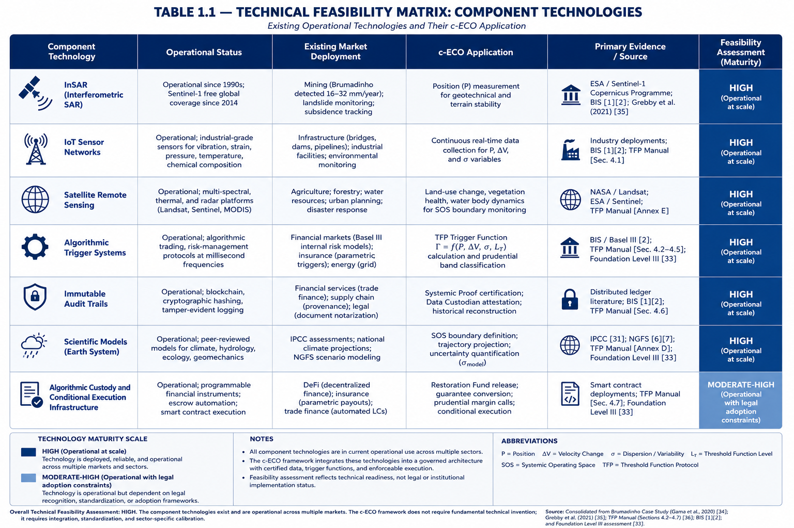
Overall Technical Feasibility Assessment:
The component technologies required by the c-ECO framework are already operational across multiple sectors, including mining, infrastructure, finance, insurance, satellite monitoring, environmental assessment, and digital audit systems. The framework does not require fundamental technological invention. Its principal challenge lies in the integration, certification, standardization, governance interoperability, and sector-specific calibration of existing technologies within a certified, auditable, and legally relevant governance architecture.
Principal Technical Constraints:
- Calibration of sector-specific thresholds;
- Interoperability among sensor systems, data custodians, and legal instruments;
- Standardization of audit trails;
- Validation of trigger logic;
- Governance of uncertainty and false positives;
- Institutional acceptance of certified data as a basis for intervention.
Technical Feasibility Assessment: HIGH
NGFS Evidence. The Network for Greening the Financial System short-term climate scenarios represent a structural acknowledgment by the central banking and supervisory community that traditional climate-risk frameworks are temporally misaligned with governance decision cycles.
By compressing the analytical horizon from 2050 toward 2030, NGFS recognizes that physical and transition risks may materialize within windows relevant to current budget cycles, regulatory reviews, investment decisions, insurance pricing, and infrastructure maintenance.
The scenarios include compound extreme-weather events, simultaneous transition shocks, fragmented policy responses, and cross-sectoral spillovers. This temporal compression is not merely a methodological refinement. It is an institutional signal that governance mechanisms designed for long-term stability are increasingly required to operate within short-term windows of decision and action.
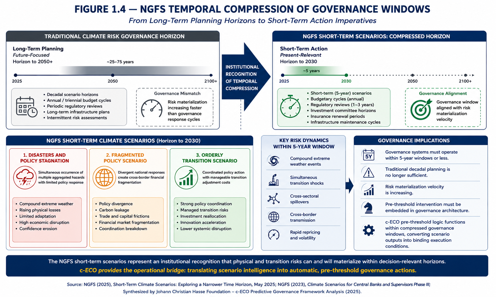
The governance implication is direct: even advanced institutional risk-assessment frameworks are compressing their temporal resolution to match accelerating physical and transition-risk dynamics. The c-ECO framework's pre-threshold logic is designed to operate within this compressed governance window by translating certified risk signals into structured execution before irreversible transitions occur.
The institutional feasibility of the framework depends on its ability to interface with existing governance structures without requiring wholesale institutional replacement.
c-ECO is designed as a distributed governance architecture. It does not centralize authority in a single supranational entity. Instead, it separates functions among monitoring, calibration, legal incorporation, technical contestation, financial custody, and restoration execution.
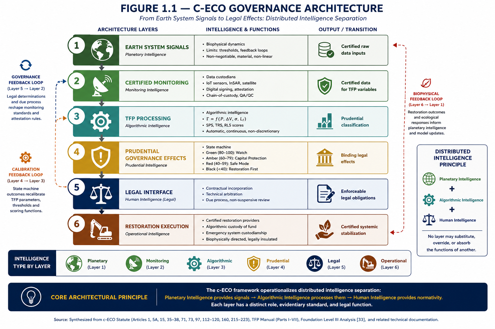
Compatibility with Prudential Supervision:
The TFP is designed as prudential execution infrastructure, functionally analogous to capital buffers, liquidity thresholds, early-intervention triggers, stress-test escalation, and automatic protection mechanisms in financial and operational risk management.
The framework aligns with three prudential ideas:
- risk should be measured continuously, not episodically;
- intervention should occur before system failure, not only after damage;
- governance should be calibrated to uncertainty, not disabled by it.
Distributed Governance Architecture:
The framework distributes institutional functions across several roles:
- Data Custodians: technical infrastructure and certified data handling;
- Calibration Council: methodological validation and parameter review;
- Arbitral Interface: technical contestation without merits-based delay;
- Legal Interface: contractual incorporation, enforceability, and due process;
- Restoration Providers: operational execution under certified protocols;
- Financial Custody Mechanisms: restoration liquidity, reserves, and conditional release.
This distributed design reduces the political and institutional risks associated with centralized environmental governance while preserving enforceability through legal incorporation and ex ante commitment.
Market Integration:
The framework is designed for modular adoption. It may be introduced through contracts, insurance instruments, financial covenants, infrastructure projects, institutional pilot programs, or model-law adaptation. It does not require immediate legislative adoption to begin operating in controlled environments.
Institutional feasibility is therefore assessed as MODERATE-HIGH. The framework is compatible with existing architectures, but adoption depends on demonstrated economic value, institutional trust, sectoral calibration, pilot validation, and acceptance by financial, legal, insurance, and regulatory communities.
The legal feasibility of the framework rests on its ability to produce binding effects within existing legal systems while respecting sovereignty, contractual autonomy, due process, and jurisdictional diversity.
Model Law Status:
The c-ECO Statute is structured as a Model Law architecture. It may be adopted, incorporated, referenced, adapted, or used in whole or in part according to the applicable legal order. This avoids the procedural obstacles associated with treaty-based international law and allows incremental adoption across legal systems.
Contractual Incorporation:
The TFP operates primarily through incorporation by reference. Once incorporated into contracts, licenses, concessions, financing instruments, insurance agreements, or institutional standards, its provisions may produce ex ante binding effects among consenting parties. This mechanism is legally analogous to arbitration clauses, choice-of-law clauses, technical standards, covenants, and standard-form contractual provisions.
Due Process Safeguards:
The framework includes safeguards designed to prevent arbitrary or unreviewable deprivation of rights:
- technical challenge regimes limited to material error, fraud, sensor failure, data-integrity breach, or procedural irregularity;
- non-suspensive review, meaning execution may continue while technical contestation is evaluated;
- separation between scientific validation, legal authority, operational execution, and financial custody;
- audit trails capable of reconstructing data, decision points, and trigger conditions;
- preservation of jurisdictional review where required by applicable law.
Compatibility with Insolvency and Property Regimes:
The framework is designed to operate within existing insolvency, bankruptcy, collateral, property, and recovery regimes. It does not create a parallel insolvency system. Instead, it introduces restoration-priority and systemic-stabilization logic into instruments that parties may adopt in advance.
Legal feasibility is assessed as MODERATE. The architecture is legally plausible, but its strongest implementation will require precedent development, test cases, arbitral recognition, jurisdictional adaptation, and careful drafting to avoid conflict with mandatory law.
The economic feasibility of the framework depends on whether c-ECO can demonstrate value to institutional actors already exposed to systemic risk, physical volatility, regulatory uncertainty, insurance gaps, fiscal stress, and infrastructure fragility.
The framework is not positioned as a conventional ESG platform or sustainability dashboard. It is positioned as predictive governance infrastructure: a system for linking monitoring, legal activation, financial reversibility, and restoration execution.
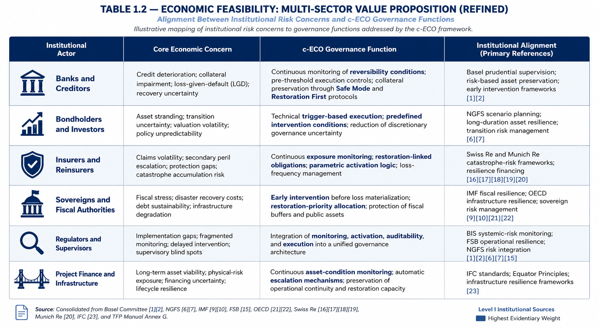
Economic Feasibility Assessment:
The economic rationale for c-ECO rests on three mechanisms:
1. Integration Efficiency:
Current enterprise and public-sector environments frequently separate monitoring systems, ESG reporting, risk analytics, legal advisory, climate scenario planning, insurance structuring, and restoration financing. Fragmentation increases coordination costs, delays intervention, and weakens accountability. c-ECO seeks to integrate these functions into a single governance architecture in which certified data, trigger logic, legal effects, and restoration execution are interoperable.
2. Predictive Loss Prevention:
The principal economic value of c-ECO is not limited to reducing administrative costs. Its stronger claim is that timely intervention may reduce the probability, scale, or irreversibility of losses that would otherwise impose costs on creditors, insurers, governments, communities, investors, and infrastructure operators. This includes avoided or reduced losses from operational shutdowns, environmental liabilities, litigation cascades, insurance repricing, fiscal recovery costs, infrastructure degradation, stranded assets, and reputational damage.
3. Governance Premium:
The framework introduces governance functions that are not fully captured by existing ESG, GRC, CLM, insurance, or monitoring markets. These include Trigger Function Protocols, Living Contract Architecture, Reversibility-Linked Governance, Restoration Funds, Safe Mode, and Restoration First execution. These mechanisms may support innovation-based value if they can demonstrate reliability, auditability, legal enforceability, and economic benefit through pilot programs.
The Brumadinho dam collapse of January 25, 2019 provides an important case for evaluating technical detectability and governance activation failure.
The case does not prove that c-ECO would have prevented the collapse. It does show that relevant instability signals existed before failure, that monitoring technologies were capable of detecting relevant changes, and that recognition did not translate into timely binding intervention.
Publicly documented signals include:
- internal awareness of dam fragility years before failure;
- geotechnical monitoring showing vertical deformation before collapse;
- precipitation increases correlated with displacement acceleration;
- retrospective InSAR analysis indicating that deformation patterns were technically detectable;
- external certification shortly before collapse despite continued instability indicators;
- interpretive ambiguity that allowed signals to be classified as non-decisive rather than decisive.
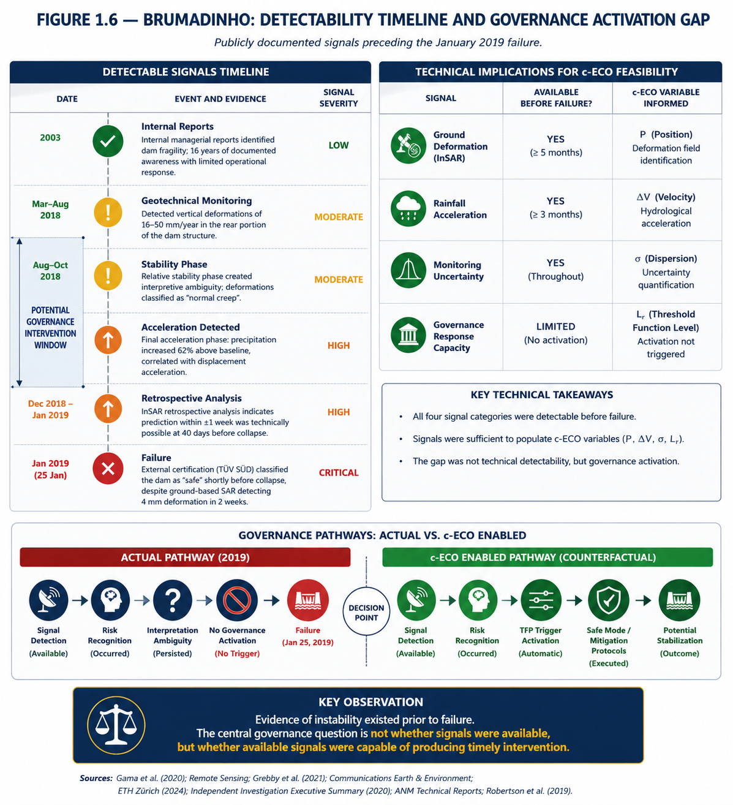
The technical implications for c-ECO are direct:
- deformation signals could inform Position (P);
- hydrological acceleration could inform Velocity (ΔV);
- interpretive uncertainty could inform dispersion or uncertainty (σ);
- governance response capacity could inform the threshold and activation logic (L_T).
The central lesson is not that data alone prevents failure. It is that data without binding activation can remain operationally inert.
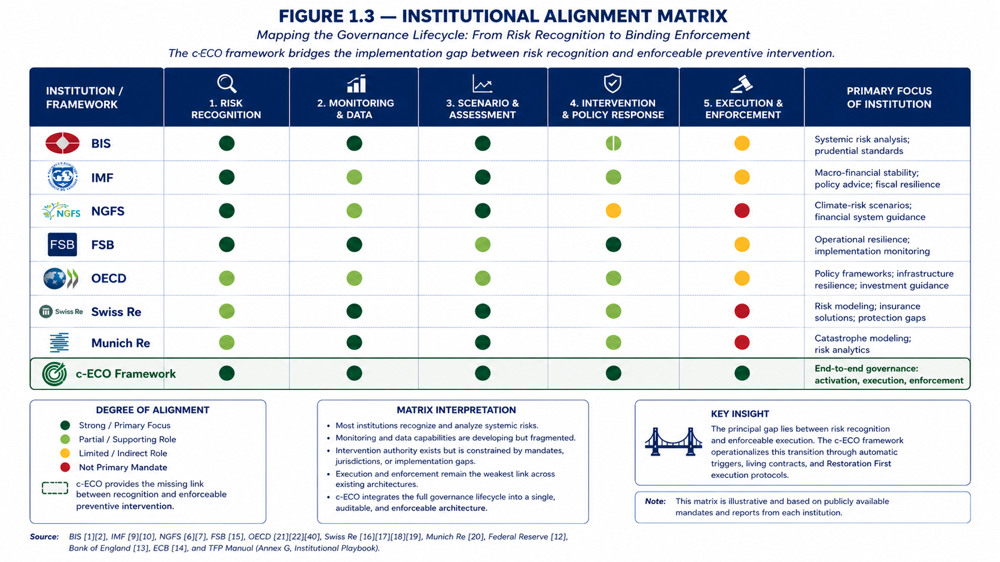
The feasibility assessment can be summarized across five dimensions: technical, institutional, legal, economic, and governance.
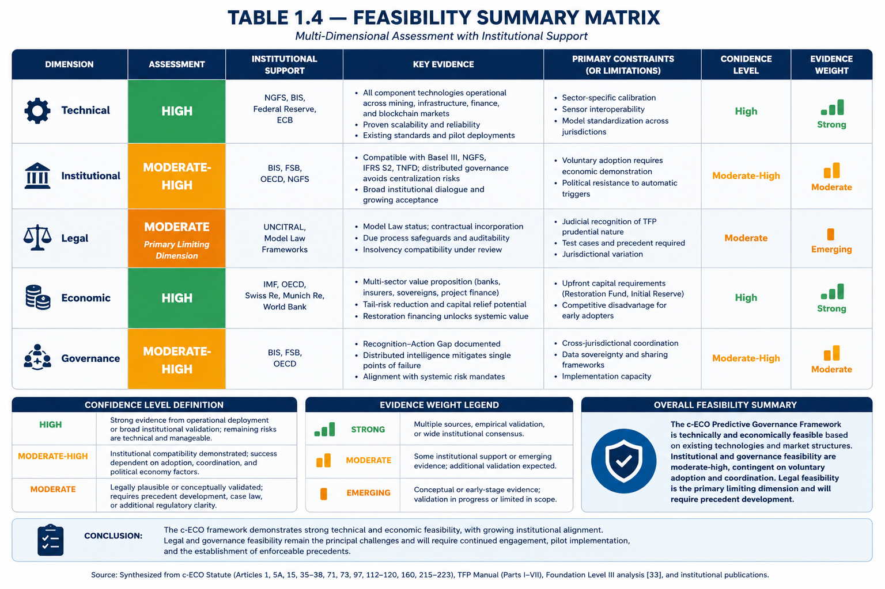
Evidence Weight Legend
Strong: Multiple sources, empirical validation, or broad institutional consensus.
Moderate: Emerging institutional support or partial validation.
Emerging: Conceptually robust but requiring additional real-world implementation evidence.
Overall Feasibility Summary:
The c-ECO Predictive Governance Framework is technically and economically feasible based on existing technologies and market structures. Institutional and governance feasibility are assessed as moderate-high, contingent upon adoption density, calibration quality, and implementation coordination. Legal feasibility remains the principal limiting dimension and will require progressive development through contractual incorporation, pilot implementation, arbitral recognition, and jurisprudential maturation.
The principal implementation challenge is not technical invention. It is institutional coordination: achieving sufficient adoption density, trust, calibration quality, and legal enforceability for the framework's network effects to materialize.
The feasibility assessment identifies six structural deficiencies repeatedly recognized across macroprudential, financial stability, insurance, infrastructure, and climate-risk literature.
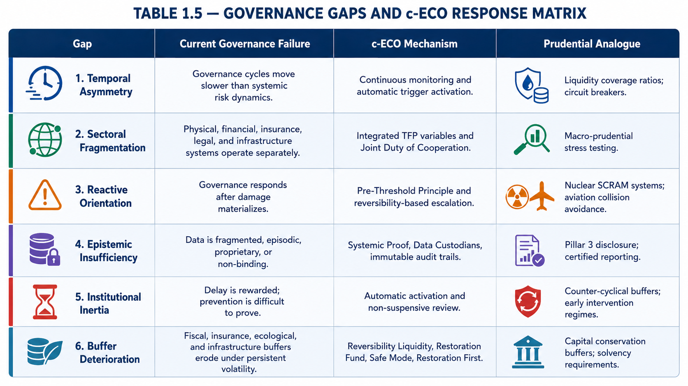
- Continuous monitoring and automatic triggers for temporal asymmetry.
- Integrated TFP variables crossing sectoral boundaries for fragmentation.
- Pre-Threshold Governance for reactive orientation.
- Systemic Proof and certified data for epistemic insufficiency.
- Automatic non-discretionary activation for institutional inertia.
- Reversibility Liquidity, Restoration Funds, and Safe Mode for buffer deterioration.
The central governance failure addressed by c-ECO is not merely lack of information. It is the recurrent failure to convert available information into timely, binding, and operationally meaningful intervention.
The Brumadinho case illustrates this problem. Monitoring signals existed. Interpretive uncertainty persisted. Certification did not prevent failure. Recognition did not become action.
c-ECO's distinctive contribution is therefore not the invention of monitoring, scenario analysis, or anticipatory reasoning. These already exist in fragmented forms. Its contribution is the integration of monitoring, certification, trigger logic, legal enforceability, financial reversibility, and restoration execution into a general governance architecture.
Core Observation
In this sense, c-ECO seeks to close the Recognition–Action Gap.
The memorandum follows a progression from feasibility to diagnosis to governance response:
Establishes the institutional, methodological, technical, economic, legal, and governance foundations of the c-ECO Predictive Governance Framework.
Provides the institutional and systemic-risk context within which c-ECO operates.
Diagnoses temporal asymmetry, sectoral fragmentation, reactive orientation, epistemic insufficiency, institutional inertia, and buffer deterioration.
- Institutional references are cited through numbered bibliography entries.
- c-ECO Statute articles are cited through CECO-ART references.
- TFP Manual provisions are cited by section or annex.
- Brumadinho materials are cited by case-study section or technical source.
- Foundation concepts are identified as Level III Analysis.
- Figures and tables are cross-referenced by chapter number.
| Audience | Recommended Sections |
|---|---|
| Policy-makers & Regulators | Sections 1.3, 1.4.5, 1.4.6 and 1.5 |
| Financial Institutions & Insurers | Sections 1.4.4, 1.4.5, Table 1.2, Figure 1.2 and Figure 1.4 |
| Legal Practitioners | Section 1.4.3, Figure 1.1 and contractual incorporation discussion |
| Technical Implementers | Table 1.1, Figure 1.1, Figure 1.4 and Figure 1.IV |
| Academic & Research Audiences | Sections 1.3 and 1.5, including Level I vs Level III distinctions |
Level I
Primary Institutional Sources including BIS, NGFS, IMF, Federal Reserve, Bank of England, ECB, FSB, OECD, World Bank, Swiss Re Institute, and Munich Re.
Level II
Sectoral and Market Commentary, including derived interpretations, specialized analyses, and contextual market assessments.
Level III
Foundation Internal Analysis, including governance architecture models, transmission hypotheses, and feasibility interpretations.
c-ECO Framework Sources
The c-ECO Systemic Governance Statute, Threshold Function Protocol, TFP Operational Manual, sectoral annexes, and the Brumadinho Retrospective Governance Simulation.
Chapter 1 Closing Observation
The conceptual frameworks and feasibility assessments presented in this chapter are Level III syntheses derived from the integration of Level I and Level II observations into stylized prudential constructs.
They are not intended as deterministic diagnoses. They are heuristic tools for governance assessment, institutional risk planning, and legal-operational design.

Chapter 2
Global Macro-Risk Transition
Chapter 2 examines the structural transition from cyclical financial instability to persistent physical and macro-financial volatility. It identifies the channels through which physical disruption, insurance retrenchment, infrastructure fragility, sovereign exposure, and systemic repricing converge into a macro-prudential problem that conventional post-2008 architectures were not designed to absorb.
The post-2008 prudential framework was designed for financial instability of a cyclical nature: credit expansions and contractions, asset-price bubbles, leverage cycles, and liquidity stress in the banking system. Its conceptual architecture — countercyclical capital buffers, stress testing, and macro-prudential surveillance — assumes that systemic risk accumulates and dissipates within recognizable financial cycles whose parameters, although variable, remain within historically observable ranges. This framework has proven effective in managing cyclical instability. It becomes, however, structurally less effective in managing the transition from cyclical risk to persistent structural volatility [1].
Physical volatility differs from financial cyclicality in three fundamental dimensions. First, it is not mean-reverting in the conventional sense. Financial cycles exhibit boom-bust dynamics that, although painful, are self-correcting through deleveraging, default, and recapitalization. Physical volatility, driven by accelerating climate disruptions, follows a directional trajectory: the frequency and severity of physical events are increasing, not oscillating around a stable mean. This directional asymmetry means that risk models calibrated on historical distributions progressively underestimate tail risk as the distribution itself shifts.
Second, physical volatility generates compound rather than discrete shocks. A financial crisis is typically a discrete event with an identifiable trigger, transmission mechanism, and resolution path. Physical volatility produces sequences of events — droughts followed by floods, storms followed by heatwaves, infrastructure damage followed by supply-chain disruption — whose cumulative impact exceeds the sum of individual events. The NGFS short-term scenarios, published in May 2025, explicitly model compound extreme-weather events as simultaneous occurrences of multiple aggregated hazards, recognizing that the interaction among hazards generates impacts not captured by single-event analysis [7][8]. This compound structure is not merely a theoretical concern; it is an observed feature of the physical-risk environment that conventional risk-assessment methodologies do not adequately capture.
Third, physical volatility operates across time horizons that exceed the planning and valuation horizons of most institutional actors. The typical investment horizon for infrastructure is twenty to thirty years; for pension funds, forty to fifty years; for sovereign debt, potentially indefinite. Physical volatility, particularly chronic physical risk from rising temperatures and sea-level change, operates over similar or longer horizons. This temporal alignment means that the full financial implications of current physical-risk trajectories are not visible within the decision-making timeframes of most institutional actors, creating a temporal mismatch between risk exposure and risk recognition that is structurally distinct from the maturity mismatches that characterize financial cyclicality [1].
The convergence of these three characteristics — directional trajectory, compound-shock structure, and temporal alignment with long-duration assets — indicates that the macro-financial system is entering a phase of structural transformation rather than cyclical adjustment. This is not a prediction of systemic collapse. It is the observation that the parameters within which post-2008 prudential frameworks were designed no longer fully describe the risk environment in which they operate.
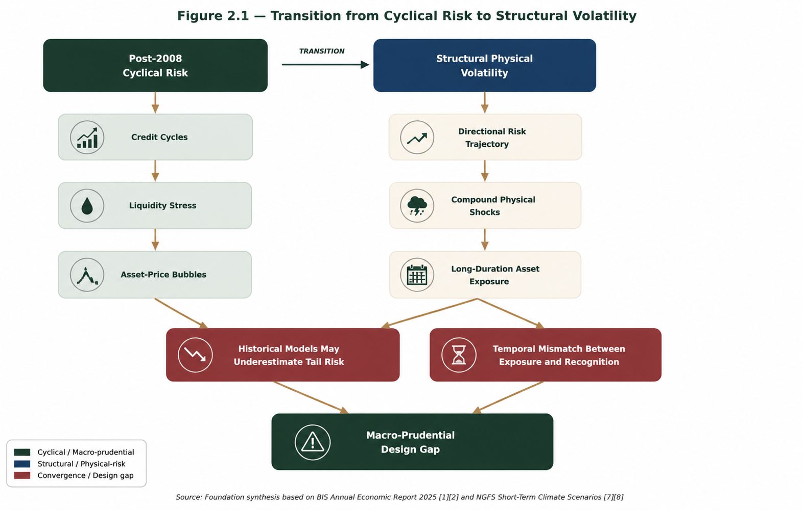
The insurance market is undergoing a structural transformation that exceeds conventional pricing cycles. Swiss Re Institute data indicate that global insured losses from natural catastrophes exceeded USD 100 billion for six consecutive years, with 2025 registering USD 107 billion in insured losses despite the absence of a major hurricane landfall in the United States [20]. This pattern is consistent with a structural trend rather than a cyclical anomaly. The long-term growth rate of insured losses has been 5–7% per year in real terms since 1996 — a rate that substantially exceeds global GDP growth over the same period [20]. The implication is that the insurance-loss burden is growing faster than the economic base that supports it, creating structural pressure on the functioning of the insurance market that conventional underwriting cycles may not fully absorb.
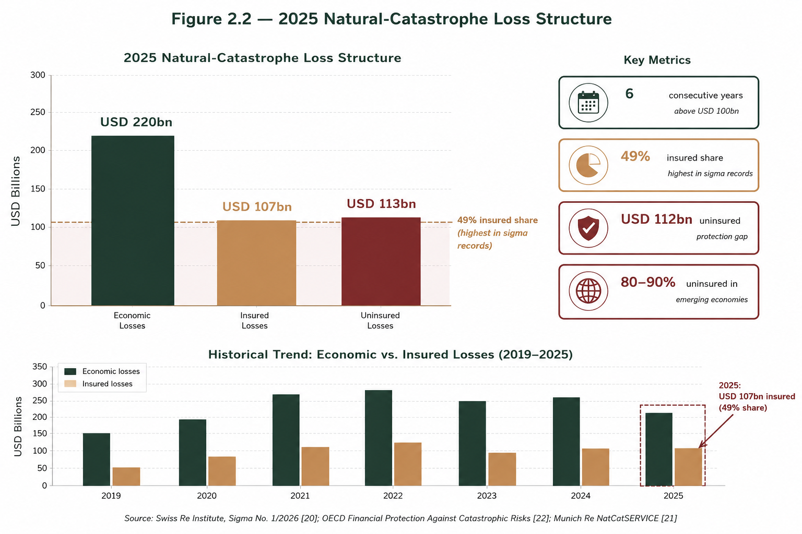
The composition of losses has shifted materially. Secondary perils — wildfires, severe convective storms, and floods — represented a record 92% of global insured natural-catastrophe losses in 2025 [20]. The Los Angeles wildfires alone generated USD 40 billion in insured losses, the largest wildfire event in sigma records. Severe convective storms contributed USD 51 billion, making 2025 the third-costliest year for that peril after 2023 and 2024, in 2025 prices [20]. This shift from primary to secondary perils is structurally significant because secondary perils are harder to model, more geographically dispersed, and less susceptible to traditional reinsurance structures than primary perils such as tropical cyclones and earthquakes. The implication is that the insurance industry's historical advantage in risk modeling is being eroded precisely where risk is concentrating.
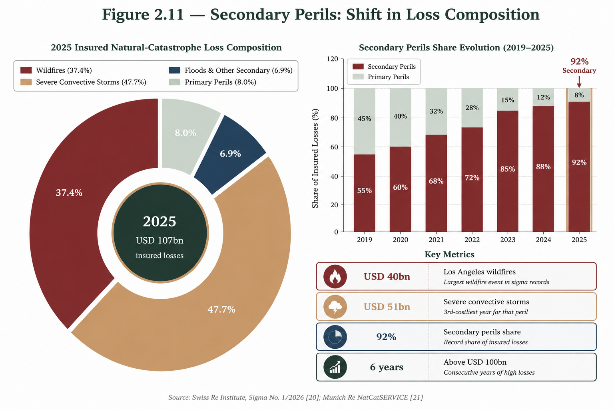
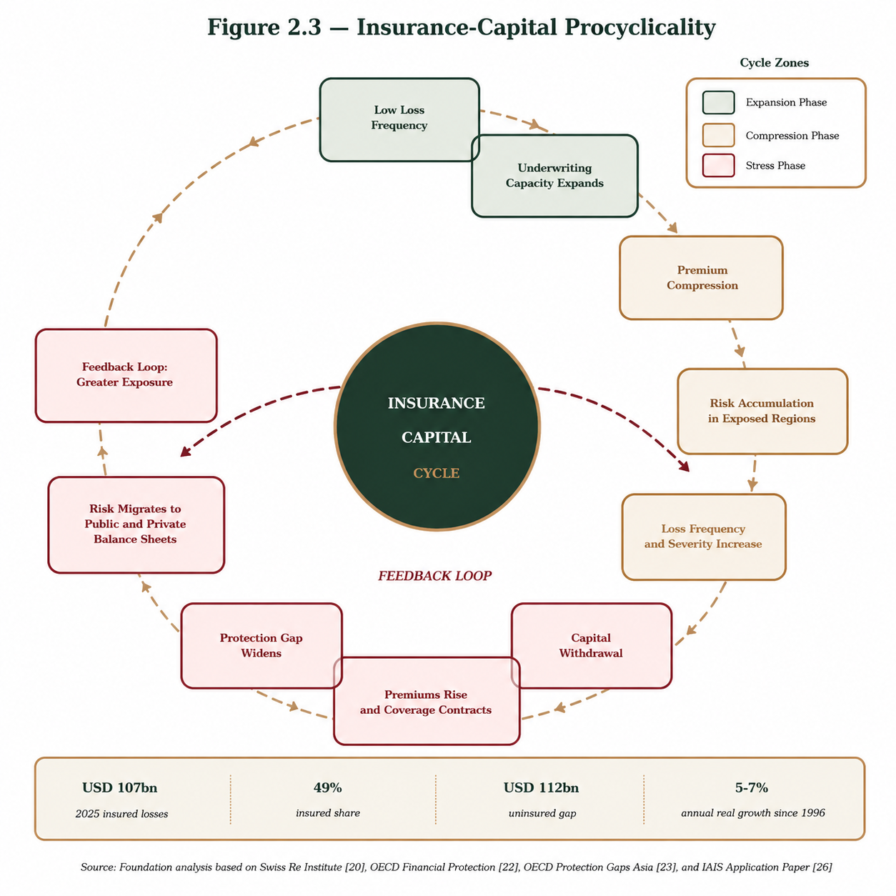
The protection gap — the portion of economic losses not covered by insurance — remains substantial despite the record insured share in 2025. Global economic losses from natural catastrophes were USD 220 billion in 2025, with approximately 49% insured [20]. Although this represents the highest insured share in sigma records, it still leaves USD 112 billion in uninsured losses. In emerging economies, 80–90% of catastrophe losses are typically uninsured [22][23]. This protection gap is not merely a market failure; it is a structural feature of insurance markets operating under conditions of accelerating physical volatility. As losses grow faster than insurance capital, the gap between insurable risk and available coverage widens rather than narrows, migrating risk onto balance sheets previously considered protected.
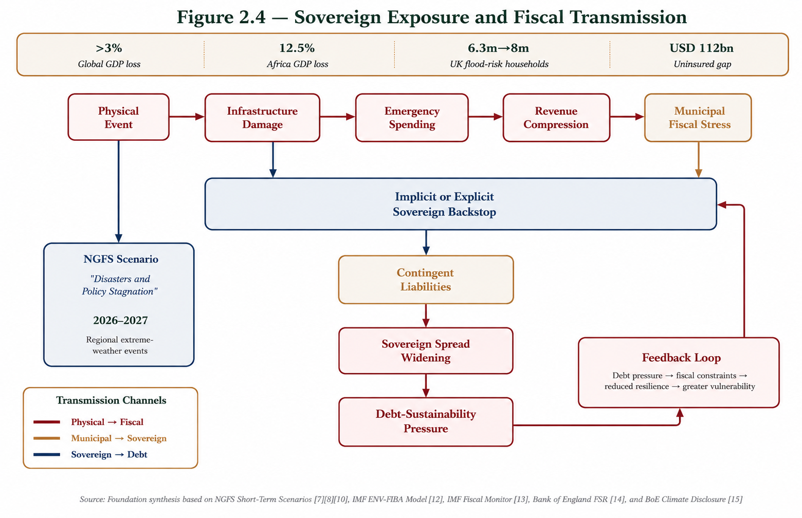
Catastrophe-bond spreads and insurance-linked securities pricing provide market-based indicators of insurance-capital stress. When physical volatility increases, cat-bond spreads widen, indicating that the marginal cost of transferring catastrophe risk has risen. Swiss Re estimates indicate that, under a peak-loss scenario, global insured losses could reach USD 320 billion in 2026 and USD 400 billion by 2030 under a one-in-ten-year peak-loss scenario [20][35][36]. The reinsurance market, with approximately USD 500 billion in traditional capital and USD 50–136 billion in additional cat-bond and alternative capital, is currently capable of absorbing such scenarios [37][30]. The sustainability of this capacity, however, depends on reinsurance capital keeping pace with rising exposures and earning its cost of capital over longer periods. If physical volatility continues to accelerate, the point at which insurance capital becomes structurally inadequate may be closer than current pricing suggests.
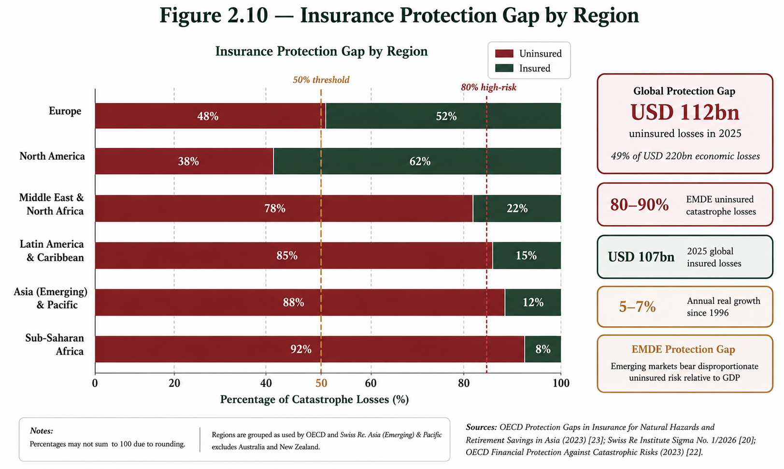
Infrastructure networks constitute the physical backbone of modern economic activity. Their continuity is not merely an operational concern, but a parameter of macro-financial stability whose disruption can generate cascading effects across productivity, employment, trade, and fiscal dynamics [14]. The Bank of England, in its December 2025 Financial Stability Report, identified infrastructure fragility as a source of financial-stability risk, observing that the number of households at risk of flooding could increase from 6.3 million in 2024 to 8 million by 2050, with implications for household wealth, mortgage markets, and sovereign fiscal capacity.
The interconnection of infrastructure systems creates correlated fragilities that sectoral risk models do not capture. Energy grids depend on digital control systems; water systems depend on electricity for pumping and treatment; transportation depends on fuel supply and digital signaling; supply chains depend on port capacity, road networks, and telecommunications. A disruption in any one system can propagate through others at speeds that exceed institutional response capacities.
The financing structure of infrastructure creates additional systemic vulnerabilities. Much critical infrastructure is financed by long-duration debt whose service depends on stable revenue flows. When physical disruption interrupts these revenues — through reduced utility consumption, port closures, transport disruption, or supply-chain fragmentation — the debt-service capacity of infrastructure operators is compromised. This impairment transmits to creditors through credit risk, to bondholders through market risk, and to sovereign guarantors through contingent-liability risk.
Infrastructure-resilience externalities further complicate risk assessment and capital allocation. Individual operators may underinvest in resilience because the benefits accrue partly to other operators and to the broader economic system, while the costs are borne entirely by the investor. This creates a collective-action problem in which systemic resilience is under-provided relative to its social value. The result is an infrastructure stock whose physical condition is progressively less adequate to the volatility environment in which it operates.
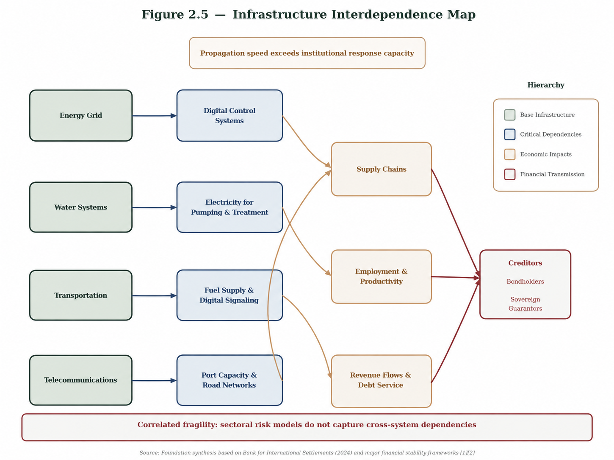
The transmission of physical and infrastructure risk to sovereign balance sheets operates through channels increasingly recognized in macro-prudential discourse, but still insufficiently integrated into fiscal risk-management practice. The NGFS short-term scenarios, published in May 2025, explicitly model cross-regional transmission of physical shocks through global trade and financial linkages, recognizing that climate impacts in one region can propagate globally [7][8]. This modeling innovation is particularly relevant to sovereign-risk assessment because it captures how physical events in emerging and developing economies can transmit to the balance sheets of advanced economies through trade, investment, and financial channels.
Direct fiscal exposure arises when sovereigns assume responsibilities previously insured or borne by the private sector. Disaster-relief spending, reconstruction financing, and social-support expenditures increase after physical events, creating contingent liabilities whose magnitude can exceed budgetary provisions. In the NGFS "Disasters and Policy Stagnation" scenario, a sequence of regional extreme-weather events during 2026 and 2027 leads to significant capital destruction, reduced productivity and output, and cascading global economic impacts. Global GDP losses reach more than 3%, with regional impacts varying — up to 12.5% of GDP in Africa [7][10]. These are not merely hypothetical projections; they are modeled pathways whose parameters are calibrated on observed data and whose transmission mechanisms are grounded in established economic theory.
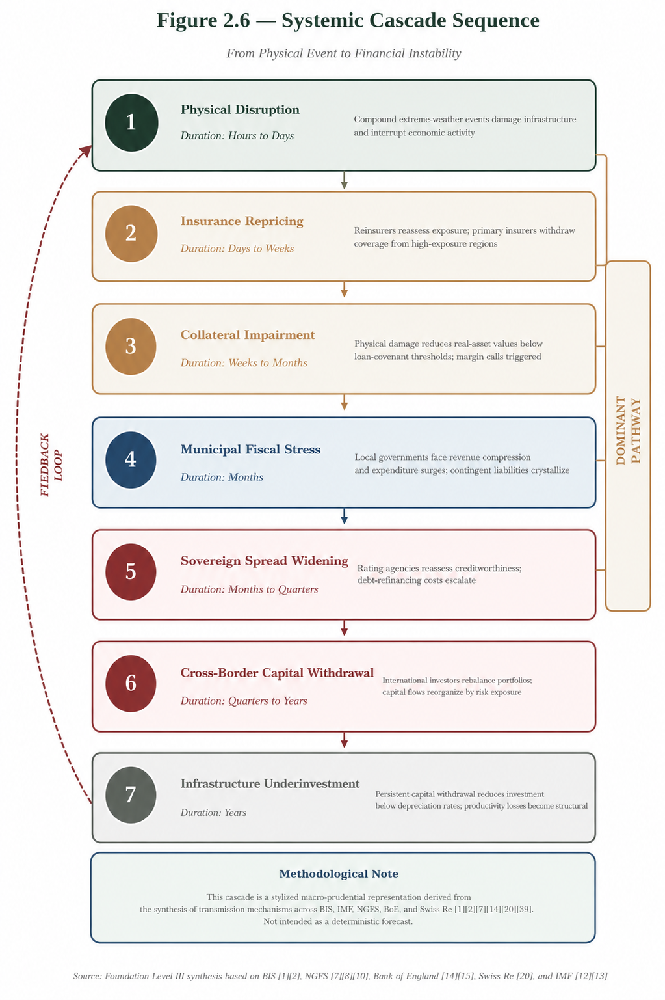
The fiscal-monetary interaction adds a layer of complexity that conventional fiscal-risk assessment does not adequately capture. When physical disruption compresses tax revenues while simultaneously increasing expenditure needs, sovereigns face pro-cyclical fiscal pressure: deficits widen during disruption, debt ratios increase, and sovereign-risk premia rise. The NGFS modeling framework orchestrates three distinct models — GEM-E3 for macroeconomic and sectoral developments, EIRIN for inflation and monetary-policy response, and CLIMACRED for financial-sector response — to capture the economy-finance feedback loop [7][8]. However, the modular nature of this framework creates frictions in capturing dynamic second-round feedback effects. Inflation results are reported exclusively by EIRIN, not by GEM-E3, suggesting that second-round effects are not fully reflected across all variables [8][11]. This compartmentalization means that macroeconomic variables, particularly inflation, may respond differently if the complete loop — including financial frictions and asset repricing — were consistently incorporated.
Municipal and sub-sovereign transmission add another layer. Local governments frequently bear primary responsibility for infrastructure maintenance, disaster response, and reconstruction, but have limited fiscal autonomy and restricted borrowing capacity. When physical events strain municipal finances, pressure transmits upward to sovereign guarantors through implicit or explicit backstop arrangements [14]. The correlation between municipal and sovereign exposure means that physical events can generate simultaneous stress across multiple levels of government, amplifying rather than diversifying fiscal risk. This intergovernmental risk migration is not always transparent: sovereign balance sheets may contain contingent liabilities whose magnitude is not fully recognized until municipal stress crystallizes [14][12].
The convergence of physical volatility, insurance contraction, infrastructure fragility, and sovereign fiscal stress is generating systemic repricing of capital allocation whose implications extend beyond the asset classes directly affected. This repricing is not a market correction in the conventional sense; it is a structural transformation of the risk-return landscape for long-duration capital whose full implications are not visible within standard investment horizons [1][2].
The BIS Annual Economic Report 2025 identifies several interconnected vulnerabilities that could amplify economic shocks into financial crises. Elevated levels of public and private debt in many countries reduce fiscal space for countercyclical responses, while asset valuations in certain markets appear stretched relative to fundamentals. The combination of high leverage and tight valuations creates conditions in which even moderate adverse shocks can trigger disproportionate market dislocations [1][2].
The growing importance of non-bank financial intermediation adds an additional layer of systemic complexity. Asset managers, hedge funds, insurance companies, and pension funds represent a significant share of total financial assets and are generally subject to lighter regulation than banks. The BIS argues for strengthened macro-prudential supervision of non-bank financial institutions to address potential contributions to systemic risk [1][2]. These institutions are significant holders of infrastructure debt, municipal securities, real estate, and other long-duration assets whose valuations are directly exposed to physical volatility and insurance repricing. Their investment decisions — portfolio rebalancing, divestment from exposed sectors, and reduced new investment in high-risk geographies — can generate market movements that amplify rather than attenuate systemic fragility.
Cross-border capital fragmentation emerges as a structural feature of the post-pandemic, post-geopolitical-shock financial landscape. The BIS estimates that global trade-policy uncertainty reached unprecedented levels in the modern era during 2024–2025, with cascading effects on investment decisions, supply-chain configurations, and financial-market volatility [5][6]. This fragmentation is not merely a political phenomenon; it is a capital-allocation phenomenon. As capital flows reorganize in response to geopolitical and physical-risk pressures, the availability of long-duration financing for infrastructure, municipal development, and sovereign investment in high-exposure regions contracts independently of local economic fundamentals. This creates an asymmetry of capital access in which the regions most exposed to physical volatility also face the greatest constraints on the capital needed to build resilience.
The BIS macro-prudential assessment suggests that the accumulation of resilience buffers during periods of stability tends to be more effective than ex post crisis management. The report calls for a more systematic approach to building resilience during good times, so that buffers are available during crises. This includes countercyclical capital buffers for banks, reinforced supervision of non-bank financial institutions, and improved monitoring of interconnections among different parts of the financial system [1][2]. For physical risk, this implies that the current window — during which physical volatility is elevated but not yet catastrophic — may represent a critical period for building the governance, informational, and institutional buffers that will be needed when physical-risk trajectories intersect more directly with financial-stability concerns.
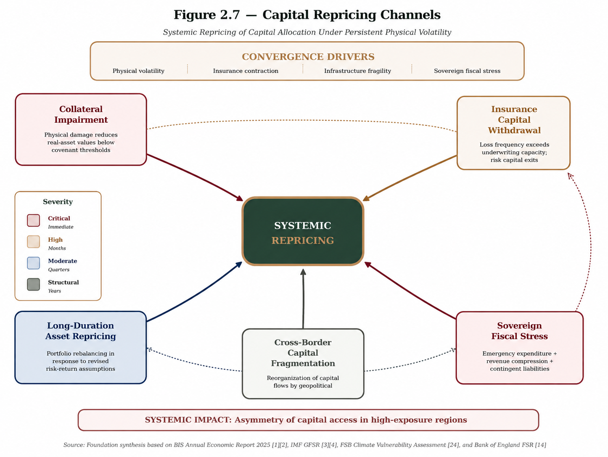
The cascade sequence presented below is a stylized macro-prudential representation derived from the synthesis of transmission mechanisms identified across institutional sources [1][2][7][14][20]. It is not intended as a deterministic forecast, but as a heuristic framework for understanding the temporal order and velocity of potential transmission pathways under compound physical disruption.
The sequence integrates observations from BIS, IMF, NGFS, Bank of England, and Swiss Re analyses, organized into a coherent escalation logic developed by the Foundation for governance-planning purposes.
The preceding sections describe the structural mechanics that link physical volatility to financial instability. What remains insufficiently specified is the sequential order in which these mechanisms activate under stress, and the speed with which each stage transmits to the next.
The following cascade sequence is not a prediction of a specific event; it is a stylized representation of a plausible transmission pathway observed in compound physical disruptions and increasingly consistent with the structural characteristics described in Sections 2.1 to 2.5.
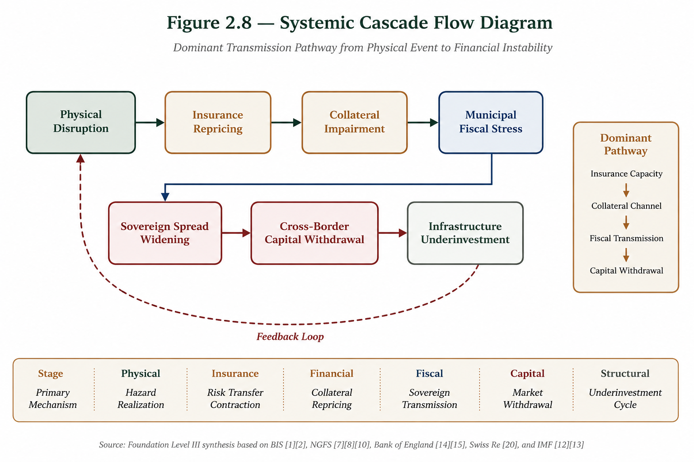
Phase 1 — Physical Disruption (Hours to Days)
Compound extreme-weather events — floods, storms, heatwaves, or simultaneous fires — damage physical infrastructure and interrupt economic activity.
NGFS short-term scenarios model these events as aggregated hazards whose interaction generates impacts exceeding single-event analysis [7][8].
At this stage, the event is observable, but its financial implications are not yet visible in market prices.
Phase 2 — Insurance Repricing and Coverage Contraction (Days to Weeks)
Loss adjusters and catastrophe modelers revise exposure estimates. Reinsurers reassess aggregate exposure and pricing adequacy.
Primary insurers withdraw coverage from high-exposure regions or impose restrictive terms.
The protection gap widens as private risk-transfer capacity contracts.
Swiss Re data indicate that secondary perils now drive 92% of insured losses, making this repricing faster and more geographically dispersed than in cycles dominated by primary perils.
Phase 3 — Collateral Impairment and Margin Compression (Weeks to Months)
Physical damage reduces real-asset values below loan-covenant thresholds.
- Loan-to-value ratios deteriorate;
- Margin creditors issue margin calls;
- Real estate investment trusts experience stress;
- Commercial mortgage-backed securities face repricing;
- Repo markets experience procyclical deleveraging.
BIS AER 2025 identifies elevated leverage and stretched valuations as conditions in which moderate adverse shocks can trigger disproportionate market dislocations.
Phase 4 — Municipal and Sub-Sovereign Fiscal Stress (Months)
Local governments face simultaneous revenue compression — reduced economic activity, lower property values, diminished tax bases — and expenditure surges for emergency response, reconstruction, and social support.
Borrowing capacity is restricted by credit-rating deterioration.
Contingent liabilities crystallize onto sovereign balance sheets through implicit or explicit backstop arrangements.
The Bank of England identified this channel as a source of financial-stability risk, particularly as Flood Re transitions toward a post-2039 pricing model.
Phase 5 — Sovereign Spread Widening and Debt-Sustainability Pressure (Months to Quarters)
Rating agencies reassess sovereign and municipal creditworthiness.
- Sovereign-risk premia rise;
- Debt-refinancing costs escalate;
- Debt sustainability deteriorates.
The fiscal-monetary interaction becomes acute: central banks face tension between inflation control, due to supply-side disruption, and financial stability, due to sovereign-debt stress.
The NGFS modeling framework captures this through the GEM-E3 / EIRIN / CLIMACRED modular architecture, although second-round feedback effects remain partially unintegrated.
Phase 6 — Cross-Border Capital Withdrawal and Fragmentation (Quarters to Years)
International investors rebalance portfolios away from exposed sovereigns, municipalities, and infrastructure operators.
Development-finance institutions reassess exposure limits.
Capital flows reorganize in response to geopolitical and physical-risk pressures, creating asymmetry of capital access in which high-exposure regions face the greatest constraints on resilience financing.
Phase 7 — Infrastructure Underinvestment and Productivity Deterioration (Years)
Persistent capital withdrawal reduces infrastructure investment below depreciation rates.
- Deferred maintenance accumulates;
- Network resilience degrades;
- Productivity losses become structural rather than transitory.
NGFS identifies this channel as critical to macroeconomic stability, observing that current models may underestimate impacts due to the absence of mechanisms for environmental tipping points and compound risks [7][10].
The result is a downward spiral in which physical fragility generates financial stress, financial stress generates underinvestment, and underinvestment generates greater physical fragility.
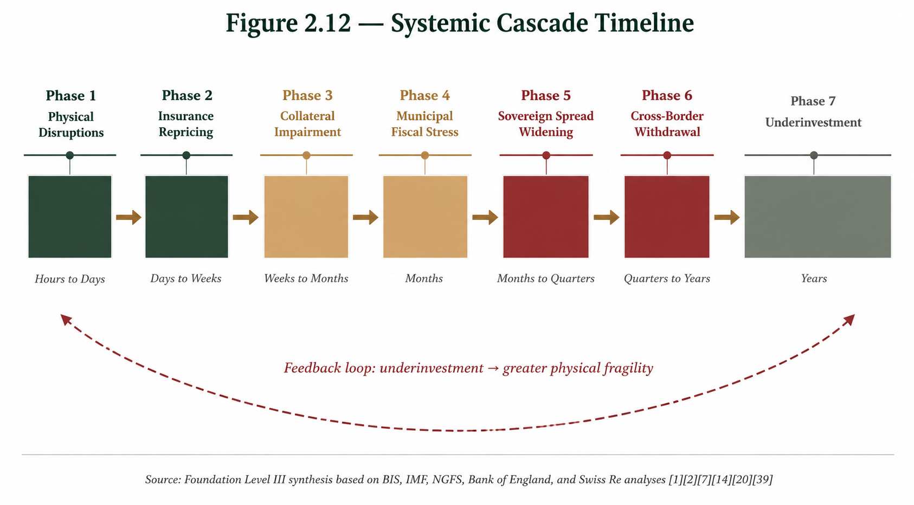
Dominant Transmission Pathway and Primary Amplification Mechanism
Under the stylized sequence presented here, the dominant transmission pathway is:
The primary amplification mechanism is the pro-cyclicality of insurance capital: coverage contracts when risk is most acute, forcing risk migration onto balance sheets that may be less capitalized, less diversified, and less prepared to absorb it [20][26].
This pathway represents a stylized synthesis of transmission mechanisms identified across primary institutional and insurance-sector sources.
Under this sequence, insurance-market capacity emerges as the most likely first buffer to come under structural pressure.
The main amplification mechanism is feedback through the collateral channel: the loop between physical-asset devaluation, margin compression, and forced deleveraging, which operates at speeds exceeding the response capacity of conventional macro-prudential tools [1][2].
The systemic implication is that intervention after Phase 3 may become progressively less effective in preventing irreversible transitions, because financial losses crystallize faster than physical assets can be repaired or governance cycles can respond.
| Capital Mechanism | Trigger Condition | Affected Institutional Actors | Systemic Stability Implication | Ref |
|---|---|---|---|---|
| Collateral Impairment | Physical damage reduces real-asset values below covenant thresholds | Banks, CMBS holders, repo markets, margin creditors | Procyclical deleveraging; fire sales; liquidity spirals; correlated default clustering | [1][2] |
| Insurance-Capital Withdrawal | Loss frequency exceeds underwriting capacity | Reinsurers, cat-bond investors, ILS funds, primary insurers | Protection-gap expansion; risk migration to uninsured balance sheets | [4][32] |
| Long-Duration Asset Repricing | Portfolio rebalancing under revised risk-return assumptions | Pension funds, insurers, sovereign wealth funds | Stranded-asset risk; asset-liability mismatch | [1][31] |
| Sovereign Fiscal Stress | Emergency expenditure + revenue compression + contingent liabilities | Sovereign issuers, municipal governments | Debt-sustainability pressure; refinancing-cost escalation | [13][15] |
| Cross-Border Capital Fragmentation | Capital-flow reorganization | EMDE sovereigns, infrastructure operators, DFIs | Resilience underinvestment; capital-access asymmetry | [22][26] |
Physical Volatility → Insurance Repricing → Collateral Impairment → Long-Duration Asset Repricing → Sovereign Fiscal Stress → Cross-Border Capital Fragmentation → Financial Instability
Infrastructure Underinvestment → Greater Physical Fragility → Physical Volatility
Note: This table presents a stylized representation of the principal capital mechanisms linking physical volatility to financial instability. The mechanisms are not mutually exclusive; in compound events, multiple mechanisms may activate simultaneously, generating amplification effects that exceed the sum of individual impacts.
Organization by capital mechanism rather than transmission channel emphasizes the financial-system mechanics underlying systemic-risk propagation.
Source: Foundation analysis based on BIS, IMF, FSB, NGFS, and ECB frameworks. Level III — Internal Strategic.
Chapter 3
Failures of Current Governance Architectures
Chapter 3 examines why existing governance architectures remain structurally misaligned with the speed, compound nature, irreversibility, and cross-sector transmission of emerging systemic risk. It analyzes temporal asymmetry, sectoral fragmentation, reactive orientation, epistemic insufficiency, institutional inertia, and the deterioration of buffers under stress.
The temporal structure of institutional governance was designed for an environment in which risks accumulated and dissipated within cycles sufficiently long to be observed, assessed, and addressed through established decision-making procedures. Annual budget cycles, multi-year strategic plans, triennial regulatory reviews, and decennial infrastructure-investment programs assume a degree of temporal stability that no longer characterizes the risk environment in which they operate [15][44].
Physical volatility operates on sub-annual, event-driven, and increasingly non-linear timelines. The sequence from physical event to infrastructure damage to insurance claims to collateral repricing to financial-market response can unfold within days or weeks. The sequence of institutional response — from event detection to damage assessment to budget reallocation to policy adjustment to implementation — typically requires months or years. This temporal mismatch is not a matter of bureaucratic inefficiency; it is a structural feature of governance architectures whose design parameters were established under conditions of lower systemic velocity [1][2].
The financial-market dimension of this temporal asymmetry is particularly acute. Collateral repricing, margin calls, and forced asset sales can occur within hours of a physical event. Algorithmic trading systems, risk-management protocols, and automatic hedging strategies operate at millisecond frequencies. Institutional governance — board meetings, regulatory consultations, legislative processes, international negotiations — operates at monthly or annual frequencies. The gap between market-response speed and institutional-response speed creates windows of systemic vulnerability during which financial amplification proceeds without corresponding governance intervention [26][28].
The NGFS short-term scenarios, with a five-year horizon to 2030, represent an attempt to compress the timeframe of climate-risk assessment so as to align it with policy and investment horizons [13][14]. Even this compressed horizon, however, may not fully capture the speed of physical-risk accumulation. The scenarios model compound extreme-weather events as simultaneous occurrences of multiple aggregated hazards, but the temporal granularity of the modeling — annual or quarterly — may not adequately represent the sub-annual dynamics of financial-market response to physical disruption. The BIS has observed that traditional indicators of financial tightening or looseness may be less reliable than in previous decades due to changes in market structure, participant composition, and cross-border financial flows [1][2]. This measurement challenge has practical consequences: if financial conditions are tighter or looser than standard indicators suggest, policy responses may be miscalibrated.
Temporal asymmetry is aggravated by the directional trajectory of physical risk. Unlike financial cycles, which exhibit self-correcting boom-bust dynamics through deleveraging and recapitalization, physical volatility exhibits directional increases in frequency and severity. This means that the mismatch between governance cycles and risk cycles is not constant; it is widening. As physical events become more frequent, the windows of institutional blindness between events shrink, but institutional-response capacity does not accelerate correspondingly. The result is a progressive governance deficit in which institutional-response capacity falls increasingly behind the speed of risk with each successive event [15][44].
| Cycle Type | Typical Frequency | Risk Event Horizon | Governance Response Horizon | Indicative Temporal Mismatch (Ratio) |
|---|---|---|---|---|
| Financial-market repricing | Milliseconds to hours | Hours to days | Months to years | 1:10,000+ |
| Insurance claims settlement | Days to weeks | Weeks to months | Months to years | 1:100 |
| Infrastructure damage assessment | Weeks to months | Months | Years | 1:10 |
| Budget reallocation | Annual | Sub-annual events | Next fiscal year | 1:1 (lagging) |
| Regulatory review | Triennial | Annual compound events | Next review cycle | 1:3 (lagging) |
| Strategic infrastructure planning | Decennial | 5-year horizon | Next planning cycle | 1:2 (lagging) |
Source: Consolidated from BIS [1][2], NGFS [6][7], Federal Reserve [12], Bank of England [13]. Note: The mismatch ratio is a stylized comparative indicator intended to illustrate relative differences in temporal scale rather than a precise quantitative measurement. Ratios above 1:10 indicate structural windows of vulnerability during which financial amplification may exceed institutional intervention capacity.
The distribution of governance responsibility across the full transmission chain from physical event to financial instability exhibits structural fragmentation that constitutes a systemic vulnerability under conditions of accelerating interdependence. No single institutional actor possesses both the mandate and the information necessary to assess systemic exposure across all stages of transmission, and the coordination mechanisms that would permit joint assessment and coordinated response are absent or inadequate [1][2].
Physical-risk governance is distributed among environmental agencies, meteorological services, civil-defense organizations, and urban-planning authorities whose mandates are primarily operational rather than financial. These agencies track climate patterns, issue warnings, manage emergency response, and regulate land use, but they do not typically assess the financial implications of their decisions for collateral values, insurance markets, or sovereign-credit credibility [15][44]. The information they generate — flood maps, storm trajectories, heatwave alerts — is essential for physical-risk management, but is not systematically integrated into financial-risk assessment frameworks.
Infrastructure governance is distributed among transportation ministries, energy regulators, water authorities, and telecommunications agencies whose mandates are sectoral rather than systemic. Each agency assesses the condition and resilience of its own infrastructure network, but few evaluate interdependencies among networks or the cascading effects of disruption across sectors. The information they generate — asset-condition reports, maintenance schedules, capacity-utilization data — is essential for infrastructure management, but is not systematically shared with financial regulators, insurers, or investors who must assess the financial implications of infrastructure fragility [15].
Financial governance is distributed among central banks, prudential regulators, securities supervisors, and market authorities whose mandates are primarily financial rather than physical. These institutions monitor banking stability, insurance solvency, market integrity, and systemic risk, but they do not typically track physical exposure, infrastructure condition, or real-time insurance availability [1][2]. The information they generate — stress-test results, capital-adequacy ratios, market-volatility indices — is essential for financial stability, but may fail to capture the physical and infrastructure drivers of financial risk operating outside conventional financial cycles.
The coordination deficit among these governance domains is not a matter of administrative inefficiency; it is a structural feature of institutional architectures whose design parameters were established under conditions of lower systemic interdependence. Under those conditions, physical, infrastructure, financial, and insurance dimensions of risk could be managed separately because their interactions were limited and their transmission effects remained contained within sectoral boundaries. Under current conditions, interactions are extensive and transmission effects cross sectoral boundaries at speeds that exceed the response capacities of fragmented governance structures. The result is a systemic blind spot: the full picture of systemic-risk accumulation is distributed across multiple institutional actors, none of which possesses the mandate, information, or authority to assemble it [1][2][15].
Environmental Domain → Infrastructure Domain → Insurance Domain → Financial Domain → Sovereign Domain
| Domain | Risk Node | Key Features | Temporal Scale |
|---|---|---|---|
| Environmental Domain | Physical Event | Meteorological trigger: storm, flood, wildfire, heatwave. Geophysical trigger: seismic, landslide, liquefaction. Temporal: sub-annual, event-driven, non-linear. | Hours to Days |
| Infrastructure Domain | Infrastructure Damage | Direct physical damage to critical assets; functional degradation of network redundancy. | Hours to Days |
| Insurance Domain | Insurance Claims & Coverage Contraction | Surge in claims volume; reserve depletion; premium repricing or coverage withdrawal. | Days to Weeks |
| Financial Domain | Collateral Repricing | Asset devaluation in affected regions; loan-to-value deterioration; covenant breaches. | Hours to Days |
| Financial Domain | Financial-Market Response | Margin calls and forced asset sales; algorithmic trading amplification; cross-border capital flow disruption. | Milliseconds to Hours |
| Sovereign Domain | Sovereign & Systemic Instability | Fiscal buffer erosion; credit-rating pressure; sovereign-spread widening. | Weeks to Months |
Feedback Loops:
- Feedback Loop A (Insurance → Collateral): Insurance claims trigger collateral repricing.
- Feedback Loop B (Collateral → Financial): Collateral impairment triggers financial-market response.
- Feedback Loop C (Sovereign → Infrastructure): Sovereign fiscal stress affects infrastructure investment.
Governance Fragmentation: Each node is governed by a distinct institutional domain — environmental, infrastructure, insurance, financial, sovereign — with no integrated monitoring or coordinated response mechanism.
Recognition–Action Gap: Risk signals detected → No escalation → Trajectory continues.
Source: Foundation synthesis based on BIS [1][2], NGFS [7][8], Bank of England [13][15], and Swiss Re [20].
The dominant governance modality for physical and infrastructure risk is reactive: assessment after disruption, allocation after damage, reform after failure. This orientation, although appropriate for discrete and recoverable events, is structurally inadequate for compound, cascading, and potentially irreversible systemic disruptions. The concept of irreversibility — central to climate and ecological risk discourse — has not been adequately operationalized within governance architectures designed for recoverable shocks [15][44].
The Irreversibility Gap: A Prudential Conceptual Framework
The distinction between recoverable and irreversible disruption is not merely a question of scale; it is a question of system dynamics. A recoverable shock is one whose effects can be reversed through intervention: a flooded building can be dried and repaired, a damaged road rebuilt, a defaulted loan restructured. An irreversible shock is one whose effects cannot be reversed: a collapsed ecosystem cannot be restored to its prior state, a displaced population cannot be returned to its prior condition, a stranded asset cannot recover its prior valuation [13][14].
The irreversibility gap is the structural mismatch between the temporal horizon of physical recovery and the temporal horizon of financial stability. When physical damage reduces collateral values, the financial loss crystallizes immediately: the loan-to-value ratio deteriorates, the covenant is breached, the margin call is triggered. Even if the physical asset is subsequently repaired, the financial loss is not recoverable if the repair occurs after the forced sale, default, or bankruptcy. The financial system operates on mark-to-market principles that do not accommodate the temporal asymmetry between physical recovery and financial recovery [1][2].
The insurance dimension of the irreversibility gap is equally significant. When insurance coverage is withdrawn from a high-exposure region, the migration of risk onto uninsured balance sheets is not reversible through subsequent market adjustments. A municipality that loses flood insurance cannot simply restore coverage once premiums rise; it must absorb the risk onto its own balance sheet or forgo protection. A creditor holding municipal bonds cannot reverse the migration of credit risk once the municipality's fiscal position deteriorates; it must either accept greater default risk or divest at potentially distressed prices [42][46].
The governance implication is that reactive modalities become progressively less effective as the share of irreversible risk within the total risk landscape increases. A governance system effective in managing recoverable shocks is ineffective in preventing irreversible ones, and may even inadvertently accelerate irreversibility by delaying intervention until the window for prevention has closed. The concept of tipping points — thresholds beyond which system dynamics qualitatively change — is central to climate science, but has not been adequately integrated into governance-architecture design [13][14].
According to Swiss Re Institute, secondary perils — including wildfires, severe convective storms, and floods — accounted for approximately 92% of global insured natural-catastrophe losses in 2025. Swiss Re further estimates that a peak-loss year could generate insured losses approaching USD 320 billion as early as 2026, with potential escalation toward USD 400 billion by 2030. These estimates illustrate the growing gap between the speed of physical-loss accumulation and the capacity of insurance and financial systems to rebuild buffers between events.
The significance for governance architecture is empirical, not merely theoretical. When secondary-peril losses exceed USD 100 billion in consecutive years, reinsurance capital cannot rebuild between events. Premiums rise, coverage contracts, and the protection gap widens. The irreversibility gap is not a conceptual abstraction; it is a measurable trajectory in insurance-market capacity.
| Secondary Perils Share (2025) | Peak-Loss Scenario (2026) | Peak-Loss Scenario (2030) |
|---|---|---|
| 92% of insured losses | USD 320bn possible peak-loss year | USD 400bn potential escalation |
Key Insight: Physical-loss accumulation may outpace the regeneration of insurance and financial buffers, contributing to widening protection gaps and systemic vulnerability.
Source: Swiss Re Institute, Sigma No. 1/2026 [20]; Munich Re NatCatSERVICE [21].
The quality of governance depends on the quality of information. Current information systems for tracking physical exposure, infrastructure condition, insurance coverage, and financial transmission are fragmented, non-standardized, and frequently proprietary. The absence of integrated real-time cross-sector monitoring capacity means that systemic-risk accumulation may proceed without institutional awareness until it manifests as a disruptive event [1][2].
The physical-risk information landscape is characterized by multiple overlapping and sometimes inconsistent data sources. Meteorological agencies produce climate projections; environmental agencies produce flood maps; geological surveys produce seismic-risk assessments; academic institutions produce vulnerability indices. Each source uses different methodologies, different temporal horizons, different spatial resolutions, and different confidence intervals. The result is a physical-risk information environment rich in detail but poor in integration [15][44].
The infrastructure-information landscape is similarly fragmented. Transportation authorities maintain road and bridge condition databases; energy regulators maintain grid-reliability metrics; water authorities maintain pipeline-condition assessments; telecommunications agencies maintain network-resilience indicators. Each database uses different condition scales, assessment frequencies, reporting standards, and access protocols [15].
The insurance-information landscape is characterized by proprietary data and competitive secrecy. Insurance companies collect detailed claims, exposure, and pricing data essential to assessing the condition of insurance markets. These data, however, are typically proprietary, shared only under regulatory compulsion, and aggregated in ways that obscure the geographic and sectoral distribution of risk [4][46].
The financial-information landscape, although more standardized than the physical, infrastructure, or insurance landscapes, still exhibits gaps relevant to systemic-risk assessment. Financial institutions report exposure data according to accounting standards not designed to capture physical risk; stress-testing frameworks designed for financial cyclicality may not adequately represent physical volatility; and market-based risk indicators may fail to capture the slow accumulation of systemic risk preceding disruptive events [1][2].
Epistemic insufficiency is not merely a technical problem; it is a governance problem. The information exists; what is lacking is the institutional capacity to integrate, analyze, and act upon it within timeframes relevant to risk dynamics. This requires not merely improved data collection, but potentially new institutional architectures for information sharing, joint assessment, and coordinated response [15][44].
Institutional systems are designed to preserve continuity, predictability, and procedural legitimacy. These characteristics are strengths under stable conditions, but become liabilities when systemic conditions evolve faster than institutional adaptation cycles. Prudential delay emerges when governance systems continue applying frameworks calibrated for prior conditions despite evidence that those conditions no longer exist [1][2].
Central banks, prudential regulators, insurance supervisors, infrastructure authorities, and fiscal institutions operate under mandates established through legal and political processes that change slowly. Their internal models, reporting frameworks, and supervisory methodologies are similarly path-dependent. Even when institutions recognize the emergence of new systemic risks, the translation of recognition into operational change is constrained by legal authority, political feasibility, organizational culture, and institutional coordination requirements [15][44].
The BIS has repeatedly emphasized that macroprudential policy is most effective when implemented before vulnerabilities become visible through crisis conditions [1][2]. Yet political and institutional incentives often operate in the opposite direction. Tightening regulation, increasing capital requirements, restricting risk exposure, or reallocating public resources before visible disruption occurs may appear excessive under prevailing market conditions. The absence of immediate crisis signals creates resistance to anticipatory intervention, even when structural indicators suggest growing systemic fragility.
This dynamic creates a prudential paradox: the more successful preventive governance becomes, the harder it is to justify politically. If preventive action avoids disruption, the avoided disruption is invisible and the intervention may appear unnecessary. If intervention is delayed until disruption becomes visible, the costs of response increase substantially and the space for reversible action narrows. This asymmetry between visible costs of prevention and invisible benefits of avoided disruption contributes directly to institutional inertia [13][14].
The delay is amplified in transnational governance contexts. Physical volatility, capital flows, insurance markets, supply chains, and sovereign exposure operate across borders, while governance authority remains largely territorial. Coordinated intervention therefore depends on international alignment among institutions operating under different legal systems, political priorities, and economic conditions. The result is that systemic risk accumulates globally while governance responses remain fragmented locally [22][26].
The NGFS Short-Term Climate Scenarios were developed specifically to address a limitation of traditional climate-risk frameworks: the mismatch between long-term climate horizons and near-term policy and investment decisions. By shifting the analytical horizon from 2050 toward the period ending in 2030, NGFS implicitly recognizes that physical and transition risks may materialize within decision cycles relevant to supervisors, investors, and fiscal authorities.
This temporal compression is not merely a methodological refinement; it is a structural acknowledgment that governance cycles designed for decadal stability are now operating within windows of five years or less. The NGFS scenarios model compound extreme-weather events, simultaneous transition shocks, and cross-sectoral spillovers — all within a timeframe that overlaps with current budget cycles, regulatory review periods, and investment-committee horizons.
The governance implication is that even the most advanced institutional risk-assessment frameworks are now racing to compress their temporal resolution to match the accelerating velocity of physical volatility. The question is whether governance mechanisms can adapt as quickly as the scenarios themselves.
References: [6][7]
Modern macroprudential governance relies on the existence of buffers: capital buffers, liquidity buffers, fiscal buffers, insurance reserves, infrastructure redundancy, emergency-response capacity, and political legitimacy. These buffers are intended to absorb shocks and preserve system continuity during periods of stress. The problem under conditions of persistent physical volatility is not merely that shocks are becoming more frequent; it is that buffers may deteriorate faster than they can be replenished [1][2].
Insurance reserves provide a clear example. Reinsurance capital can absorb major losses if large events remain infrequent enough for reserves to rebuild between events. When compound events occur in close succession, reserve rebuilding becomes progressively more difficult. Capital providers demand higher returns, premiums increase, coverage contracts, and the protection gap widens [4][32]. The buffer still exists, but its regenerative capacity weakens.
Fiscal buffers exhibit similar dynamics. Sovereigns may absorb isolated disasters through emergency borrowing, reserve drawdowns, or temporary fiscal deficits. Repeated disruptions, however, erode debt sustainability, increase refinancing costs, and reduce fiscal flexibility. The sovereign remains solvent, but with progressively less capacity to absorb additional shocks [13][14].
Infrastructure redundancy deteriorates through deferred maintenance and underinvestment. Critical infrastructure systems often continue functioning despite declining resilience because degradation accumulates gradually. The absence of immediate failure obscures the reduction in margin for error. Under persistent stress conditions, however, infrastructure redundancy may decline below the threshold necessary to prevent cascading disruption [15].
Political and institutional legitimacy are also buffers. Public trust in governance institutions supports compliance with emergency measures, fiscal adjustment, insurance reform, and long-term infrastructure planning. Repeated failures to anticipate or manage disruptive events can erode this legitimacy, reducing institutional capacity precisely when coordination becomes most necessary [44].
The deterioration of buffers creates systemic exhaustion risk. Systems do not necessarily fail because a single shock exceeds total capacity; they fail because repeated shocks erode the regenerative mechanisms that maintain resilience over time. A system capable of surviving one major disruption may not survive ten moderate disruptions occurring in rapid succession. This distinction between instantaneous failure and cumulative exhaustion is critical for understanding the governance implications of persistent physical volatility [13][14].
| Buffer Type | Institutional Source | Key Metric | Baseline Period | Current Status | Trajectory |
|---|---|---|---|---|---|
| Global Reinsurance Dedicated Capital | Gallagher Re Reinsurance Market Report (FY 2024); Aon Reinsurance Market Dynamics (Q1 2025) | Total dedicated capital (traditional + alternative) | USD 769 billion (FY2024, Gallagher Re) | USD 720 billion (Q1 2025, Aon); traditional capital remains on track for moderate growth in 2025 | Growing Capacity with Increasing Concentration Risk |
| Sovereign Fiscal Space | IMF Fiscal Monitor (October 2025); IMF Global Debt Monitor (2025) | Global public debt-to-GDP | 84% (2019, IMF Global Debt Database) | Projected above 100% by 2029: highest level since 1948 | Rising Fiscal Pressure and Refinancing Vulnerability |
| Insurance Protection Gap | Swiss Re Institute Sigma Reports; OECD Protection Against Catastrophic Risks | Share of economic losses uninsured (global) | 57% uninsured (2024); USD 181 billion protection gap | 80–90% uninsured in many emerging markets; highest uninsured share in decades in several regions | Expanding Protection Gap and Underinsurance Exposure |
| Infrastructure Resilience | OECD Infrastructure for a Climate-Resilient Future (2024); World Economic Forum Global Risks Report (2025) | Climate-resilient infrastructure investment requirement | USD 6.9 trillion annually by 2030 | Current funding remains significantly below estimated requirements; deferred maintenance remains widespread | Persistent Underinvestment and Deferred Maintenance Pressure |
| Political Legitimacy | OECD Survey on Drivers of Trust in Public Institutions (2024); OECD Government at a Glance (2025) | High or moderately high trust in national government | 43% (2021 OECD average) | 41% (2023 OECD average); substantial variation across jurisdictions | Trust Volatility Under Repeated Governance Stress |
Methodology Note: This table aggregates institutionally sourced indicators intended to illustrate directional pressures affecting key systemic resilience buffers. The indicators should not be interpreted as direct measures of deterioration, but rather as observable trends associated with the capacity of financial, fiscal, infrastructural, insurance, and governance systems to absorb and recover from repeated shocks.
All figures are traceable to publicly available institutional publications and are presented according to the methodology employed by the originating institution. Where multiple institutions report similar concepts using different methodologies, such as reinsurance capital, methodological differences are explicitly acknowledged.
Sources: Gallagher Re [38], Aon [39], IMF [9][10], OECD [21][22][40][41][42][43], World Economic Forum [41], Swiss Re [20], BIS [1][2].
The Bank of England has highlighted increasing exposure of households, insurers, and local authorities to flood-related losses, alongside the long-term transition challenges associated with the Flood Re program. These observations suggest that resilience mechanisms may weaken when exposure grows faster than insurance, fiscal, and infrastructure buffers can be replenished.
The BoE's analysis demonstrates that buffer deterioration is not merely a theoretical risk but a measurable trajectory. When flood exposure increases at rates that exceed the capacity of insurance schemes to absorb losses, the migration of risk onto public balance sheets becomes structural rather than cyclical. The transition from cyclical to structural risk absorption is precisely the mechanism through which buffer deterioration becomes systemic exhaustion.
Key Insight: Buffer monitoring must track exposure trajectory, not just current capacity. A buffer adequate today may become inadequate within a single budget cycle.
References: [12][13]
A recurring characteristic of current governance architectures is the widening separation between recognition of systemic risk and operational capacity to act upon that recognition. Institutions increasingly acknowledge the existence of climate-related financial risk, infrastructure fragility, insurance-market stress, and compound systemic exposure. Yet recognition alone does not produce intervention. The gap between identifying risk and activating effective governance responses constitutes one of the central structural deficiencies of contemporary prudential systems.
This recognition–action gap emerges from multiple sources simultaneously. Legal mandates may not authorize intervention before conventional damage thresholds are reached. Financial institutions may recognize exposure but lack incentives to reduce it if short-term returns remain favorable. Public authorities may understand infrastructure fragility but lack fiscal space or political support for anticipatory investment. Insurance markets may identify unsustainable exposure trajectories while continuing to underwrite risk because competitive dynamics discourage unilateral withdrawal [1][2][4].
The consequence is that systemic vulnerability can become widely recognized without generating corresponding structural adjustment. Risk becomes informationally visible but operationally inactive. Institutions continue functioning according to governance assumptions inherited from prior stability conditions even after those assumptions have become progressively less aligned with the emerging volatility environment [13][14].
The recognition–action gap is not equivalent to ignorance or denial. It is a condition in which institutions possess increasing awareness of systemic fragility while remaining structurally unable — legally, politically, operationally, or economically — to intervene at the speed and scale necessary to alter transmission trajectories.
The existence of this gap explains why increasing volumes of risk disclosure, stress testing, scenario analysis, and climate reporting do not necessarily translate into proportional increases in systemic resilience. Information may improve while vulnerability simultaneously deepens.
The governance challenge therefore shifts from risk identification to the operationalization of intervention before destabilizing thresholds are crossed [10][11][13].
The Brumadinho dam collapse (January 25, 2019) illustrates the distinction between risk recognition and governance activation. Publicly available evidence indicates that multiple detectable signals of systemic instability existed prior to the failure, yet none generated binding operational escalation capable of interrupting the trajectory before irreversible losses occurred.
Documented Recognition Timeline
| Date | Event | Description |
|---|---|---|
| 2003 | Internal Reports | Internal managerial reports identified dam fragility; 16 years of documented awareness with limited operational response. |
| Mar–Aug 2018 | Geotechnical Monitoring | Detected vertical deformations of 16–50 mm/year in the rear portion of the dam structure. |
| Aug–Oct 2018 | Stability Phase | Relative stability phase created interpretive ambiguity; deformations classified as "normal creep" rather than precursors to failure. |
| Oct–Dec 2018 | Acceleration Detected | Final acceleration phase; precipitation increased 62% above baseline, correlated with displacement acceleration. |
| Dec 2018–Jan 2019 | Retrospective Analysis | InSAR retrospective analysis indicates prediction within ±1 week was technically possible at 40 days before collapse. |
| Jan 25, 2019 | Failure | External certification (TÜV SÜD) classified the dam as "safe" shortly before collapse, despite ground-based SAR detecting 4 mm deformation in 2 weeks. |
Governance Activation Failure
Risk signals detected → Recognition achieved → No binding escalation mechanism activated → Failure
Despite recognition at multiple institutional levels (managerial, technical, regulatory, certifier), no binding suspension mechanism was activated. The absence of automatic triggers, mandatory operational interruption protocols, and pre-positioned reversibility liquidity meant that technical recognition remained informationally visible but operationally inactive.
Quantified Consequences
- 270 confirmed deaths + 11 persons missing
- 3.13M m² environmental devastation
- 11.7M m³ toxic tailings released over 10 km
- USD 17.9bn total provisions (Vale S.A.)
- USD 13.5bn payments already effected
- R$ 10.55bn reparation agreement (~USD 2.0bn)
- ~200 upstream dams paralyzed across Brazil
- USD 3–7bn estimated reputational loss
The Brumadinho case provides an empirical example of the Recognition–Action Gap. Systemic fragility was recognized at multiple technical and managerial levels while institutions remained structurally incapable of converting recognition into mandatory preventive intervention. The gap was not informational; it was operational and legal.
Source: Consolidated from publicly available reports; internal documents (as per civil actions), TÜV SÜD reports.
The failures described throughout this chapter are not isolated deficiencies capable of correction through incremental reform alone. They emerge from deeper structural characteristics of governance systems designed for lower systemic velocity, weaker interdependence, and more recoverable forms of disruption.
Temporal asymmetry, sectoral fragmentation, reactive orientation, epistemic insufficiency, institutional inertia, and buffer deterioration interact as mutually reinforcing constraints that reduce the capacity of existing governance architectures to operate effectively under conditions of persistent compound volatility.
The implication is not that current institutions are obsolete, nor that systemic collapse is inevitable. The implication is that governance systems calibrated for cyclical instability may become progressively less effective when confronted with directional physical volatility operating across interconnected financial, infrastructural, and sovereign domains [1][2][15].
The challenge is therefore architectural rather than merely procedural: the need to develop governance modalities capable of operating before irreversibility thresholds are crossed, rather than after disruption has already crystallized into financial and institutional loss.
This architectural challenge becomes especially significant under conditions in which the speed of systemic transmission exceeds the speed of institutional adaptation. In such contexts, governance effectiveness depends not only on the quality of institutions, but on the temporal alignment between risk dynamics and decision-making capacity.
Where this alignment deteriorates, systemic fragility may accumulate despite increasing institutional sophistication [13][14].
The principal limitation of current governance architectures is not the absence of information, institutions, or technical expertise. It is the absence of operational mechanisms capable of converting recognition of accelerating systemic fragility into coordinated preventive intervention before destabilizing transitions become materially irreversible.
Concluding Note — Integrated Governance Architecture
The analysis presented throughout Chapters 1 to 3 supports a central conclusion: the principal challenge confronting contemporary governance architectures is not the absence of information, institutional capacity, scientific knowledge, or risk-recognition mechanisms.
Rather, it is the persistent difficulty of converting recognition of systemic fragility into timely, coordinated, and operationally effective intervention before destabilizing transitions become materially irreversible.
The c-ECO Predictive Governance Framework is presented as one possible response to this challenge. Its purpose is not to replace existing regulatory systems, supervisory authorities, financial institutions, insurance markets, or sovereign governance structures.
Instead, it seeks to provide an integrated governance architecture capable of linking certified monitoring, prudential assessment, legal enforceability, restoration financing, and operational execution within a single coherent framework.
The complete legal architecture of the framework is set forth in the c-ECO Systemic Governance Statute. The operational architecture, implementation logic, calibration procedures, and governance protocols are detailed in the Threshold Function Protocol (TFP) Operational Manual and its associated technical annexes.
Accordingly, this memorandum should be understood as a feasibility and diagnostic study rather than a comprehensive presentation of the c-ECO framework itself.
Chapters 1 through 3 establish the institutional context, risk landscape, and governance deficiencies that motivate the framework. The Statute and the TFP Operational Manual provide the corresponding legal and operational architecture intended to address those deficiencies.
Together, these instruments form an integrated governance system designed to operate under conditions of increasing systemic complexity, accelerating physical volatility, and growing interdependence among environmental, infrastructural, financial, and legal systems.
Whether such an architecture ultimately proves successful will depend not only upon technical feasibility or legal design, but upon institutional adoption, operational validation, and demonstrated capacity to improve resilience in practice.
The purpose of this memorandum is therefore not to claim definitive solutions, but to establish a structured basis for further institutional evaluation, pilot implementation, and informed policy discussion.
Visual Appendix
Figure 1.1 — c-ECO Governance Architecture
Figure 1.2 — Institutional Convergence Map
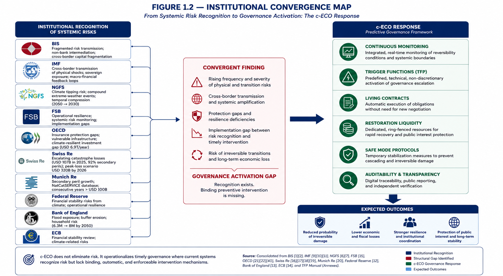
Figure 1.3 — Institutional Alignment Matrix
Figure 1.4 — NGFS Temporal Compression of Governance Windows
Figure 1.IV — Brumadinho: Recognition Without Activation
Figure 2.1 — Transition from Cyclical Risk to Structural Volatility
Figure 2.2 — 2025 Natural-Catastrophe Loss Structure
Figure 2.3 — Insurance-Capital Procyclicality
Figure 2.4 — Insurance Protection Gap by Region
Figure 2.5 — Infrastructure Correlated Fragility Map
Figure 2.6 — Fiscal Transmission Pathway
Figure 2.7 — Capital Repricing Channels
Figure 2.8 — Systemic Cascade Flow Diagram
Figure 2.10 — Peak-Loss Scenario Projections
Figure 2.11 — Secondary Perils: Shift in Loss Composition
Figure 2.12 — Cascade Timeline
Figure 3.1 — Governance Fragmentation: From Physical Event to Financial Instability
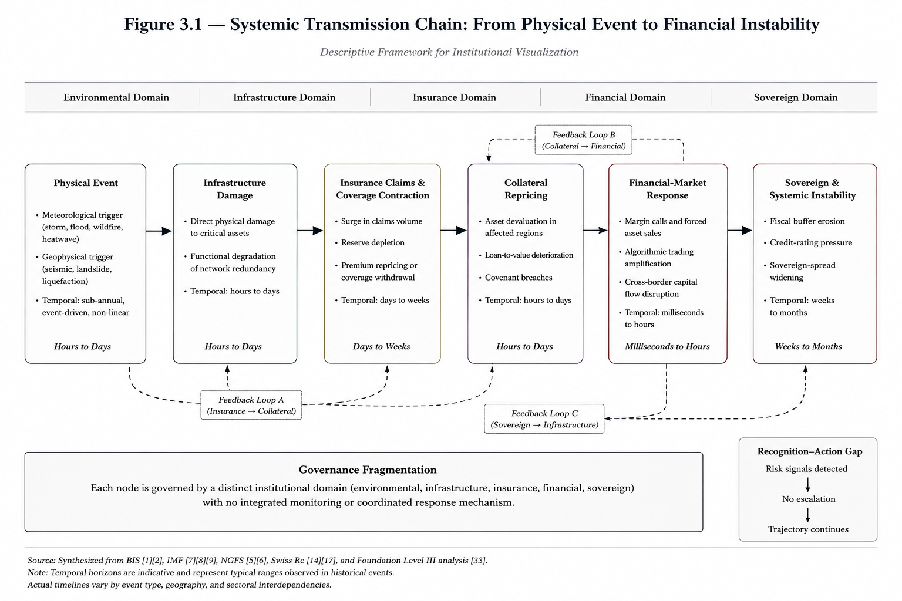
| Level | Classification | Description |
|---|---|---|
| Level I | Primary Institutional Sources | BIS, NGFS, IMF, FSB, ECB, Bank of England, Swiss Re Institute, Munich Re. |
| Level II | Derived Institutional Interpretation | Comparative analysis, cross-source synthesis, and prudential interpretation based on primary institutional materials. |
| Level III | Foundation Strategic Estimates | Internal conceptual estimates, systemic transmission hypotheses, and architecture extrapolations developed for governance analysis. |
[1] Bank for International Settlements (BIS). Annual Economic Report 2025. Basel: BIS, 29 June 2025.
[2] Bank for International Settlements (BIS). Macroprudential Policy and Systemic Stability Frameworks. Basel: BIS, 2025.
[3] Bank for International Settlements (BIS). Non-Bank Financial Intermediation and Systemic Risk. Basel: BIS, 2025.
[4] Bank for International Settlements (BIS). Analysis on Trade Fragmentation and Capital Flows. Basel: BIS, 2025.
[5] Bank for International Settlements (BIS). Cross-Border Financial Fragmentation Risks. Basel: BIS, 2025.
[6] Network for Greening the Financial System (NGFS). Short-Term Climate Scenarios for Central Banks and Supervisors. Paris: NGFS, May 2025.
[7] Network for Greening the Financial System (NGFS). Technical Documentation — Short-Term Climate Scenarios. Paris: NGFS, May 2025.
[8] Network for Greening the Financial System (NGFS). Disasters and Policy Stagnation Scenario. Paris: NGFS, May 2025.
[9] International Monetary Fund (IMF). Global Financial Stability Report 2025. Washington, D.C.: IMF, April 2025.
[10] International Monetary Fund (IMF). Cross-Border Transmission of Physical Shocks. Washington, D.C.: IMF, 2025.
[11] International Monetary Fund (IMF). Sovereign Exposure to Climate Risk. Washington, D.C.: IMF, 2025.
[12] Federal Reserve Board. Financial Stability Report. Washington, D.C.: Federal Reserve System, November 2025.
[13] Bank of England. Financial Stability Report. London: Bank of England, December 2025.
[14] European Central Bank (ECB). Financial Stability Review 2025. Frankfurt: ECB, 2025.
[15] Financial Stability Board (FSB). Annual Report 2025. Basel: FSB, 2025.
[16] Swiss Re Institute. Natural Catastrophes in 2025: The Persistent Rise of Wildfire and Storm Risk. Sigma No. 1/2026. Zurich: Swiss Re, March 2026.
[17] Swiss Re Institute. Global Natural Catastrophe Losses: Long-Term Trend Analysis. Zurich: Swiss Re, 2025.
[18] Swiss Re Institute. Secondary Perils: Wildfire, Severe Convective Storms and Floods. Zurich: Swiss Re, 2025.
[19] Swiss Re Institute. Peak-Loss Scenario: Insured Losses Could Reach USD 320 Billion in 2026. Zurich: Swiss Re, March 2026.
[20] Munich Re. NatCatSERVICE Global Natural Catastrophe Loss Database. Munich: Munich Re, 2025.
[21] OECD. Protection Gaps in Insurance for Natural Hazards and Retirement Savings in Asia. Paris: OECD, July 2023.
[22] OECD. The Role of International Reinsurance Markets in Supporting Post-Disaster Economic Recovery. Paris: OECD, 2023.
[23] World Bank. Country and Lending Groups Classification 2025. Washington, D.C.: World Bank, 2025.
[24] BBVA Research. NGFS Short-Term Scenarios: From 2050 to the Next Five Years. Madrid: BBVA Research, 2025.
[25] ISDA. Climate Risk Scenario Analysis for the Trading Book: Phase 4 — NGFS Short-Term Scenarios. New York: ISDA, 2025.
[26] PreventionWeb (UNDRR). Wildfires, Storms, Floods Contribute to Record 92% of Global Insured Losses in 2025. Geneva: UNDRR, 2026.
[27] Insurance Journal. Wildfires, Storms, Floods Account for Record 92% of Global Insured Losses. 2026.
[28] Risk & Insurance. Natural Catastrophe Insured Losses Hit USD 107 Billion in 2025. 2026.
[29] Intelligent Insurer. Peak-Loss Year May Send Cat Losses to USD 320 Billion in 2026. 2026.
[30] Thomson Reuters Practical Law. BoE Financial Stability Report and FPC Record: December 2025. London: Thomson Reuters, 2025.
[31] Regulation Tomorrow. BoE's Latest Financial Stability Assessment. 2025.
[32] Global Banking & Finance Review. Swiss Re Projects Rising Natural Catastrophe Insurance Claims by 2030. 2026.
[33] Johann Christian Hasse Foundation. Systemic Cascade Sequence: From Physical Event to Financial Instability — Stylized Transmission Pathway. Internal Analysis, 2025.
[34] Johann Christian Hasse Foundation. The Irreversibility Gap: A Prudential Conceptual Framework. Internal Paper, 2025.
[35] Johann Christian Hasse Foundation. Temporal Asymmetry and Governance-Cycle Mismatch. Internal Analysis, 2025.
[36] Johann Christian Hasse Foundation. Recognition–Action Gap: Structural Governance Deficiency. Internal Analysis, 2025.
[37] Johann Christian Hasse Foundation. Source Classification Architecture: Levels I, II and III. Internal Methodology, 2025.
[38] Gallagher Re. Reinsurance Market Report — Full-Year 2024. London: Gallagher Re, April 2025.
[39] Aon. Reinsurance Market Dynamics — Midyear 2025 Renewal. London: Aon, June 2025.
[40] OECD. Infrastructure for a Climate-Resilient Future. Paris: OECD, 2024.
[41] World Economic Forum. Global Risks Report 2025. Geneva: WEF, January 2025.
[42] OECD. Survey on Drivers of Trust in Public Institutions — 2024 Results. Paris: OECD, July 2024.
[43] OECD. Government at a Glance 2025. Paris: OECD, June 2025.
[44] Bündnis Entwicklung Hilft & IFHV. World Risk Report 2024. Berlin: Bündnis Entwicklung Hilft, 2024.
[45] Chen et al. Climate Change Vulnerability Index 2025. 2025.
[46] Guy Carpenter. Reinsurance Capital Structure Report 2024. New York: Guy Carpenter, 2024.
[47] Global Market Insights. Parametric Insurance Market Size and Growth. 2025.
[48] Swiss Re Capital Markets. Cat Bond Secondary Market Pricing. 2025.
[49] TRACE. Cat Bond Secondary Market Trade Data. 2025.
[50] Bloomberg LP. Insurance-Linked Securities Market Data. 2025.
[CECO-STATUTE] c-ECO Systemic Governance Statute (Articles 1–232). Johann Christian Hasse Foundation, 2025.
[CECO-TFP] Threshold Function Protocol (TFP v1.1) — Articles 215–232. Johann Christian Hasse Foundation, 2025.
[CECO-TFP-MANUAL] TFP Operational Manual — Parts I–VII, Annexes A–G. Johann Christian Hasse Foundation, 2025.
[CECO-BRUMADINHO] c-ECO Applied Case Study — Brumadinho Retrospective Governance Simulation. Version 2.1 (June 2026). Johann Christian Hasse Foundation.
- Gama, F.F., Mura, J.C., Paradella, W.R., & de Oliveira, C.G. (2020). “Deformations Prior to the Brumadinho Dam Collapse Revealed by Sentinel-1 InSAR Data Using SBAS and PSI Techniques.” Remote Sensing, 12(21), 3537.
- Grebby, S., Sowter, A., Gluyas, J., et al. (2021). “Advanced InSAR and InSAR Time Series Analysis for the Detection of Active Deformation of the Brumadinho Tailings Dam.” Communications Earth & Environment, 2, Article 2. https://doi.org/10.1038/s43247-020-00083-2
- ETH Zürich (2024). Spectral Time-Series Analysis of InSAR Data — Retrospective Prediction Study. Geodesy and Geodynamics Group.
- Santos, A.R., et al. (2020). “The 2019 Brumadinho Tailings Dam Collapse.” International Journal of Applied Earth Observation and Geoinformation, 91, 102155.
- Robertson, A.M., et al. (2019). “Report of the Expert Panel on the Technical Causes of the Failure of Feijão Dam I.” Commissioned by Vale S.A., December 2019.
- Independent Investigation Executive Summary (2020). Brumadinho Dam Collapse — Executive Summary of Independent Investigation.
- ANM Technical Reports. Agência Nacional de Mineração (Brazil), 2019–2020.
- Vale S.A. (2025). “Vale Posts Strong 2025 Results as Output Rises and ESG Overhaul Advances.” Annual Report / Press Release, April 2025.
- Vale S.A. (2025). “Vale's Performance in 1Q25.” Quarterly Report.
- Acordo de Reparação Integral (2021). TJMG — R$ 10,55 bilhões. Federal Court of Minas Gerais.
- Lei 12.334/2010 (Brasil). Política Nacional de Segurança de Barragens.
- Lei 14.066/2020 (Brasil). Altera a Lei 12.334/2010 — regras mais rigorosas para barragens de alto risco.
- Global Tailings Standard (2020). International Council on Mining and Metals (ICMM).
- Kotzé, Louis J. & Kim, Rakhyun E. (2019). “Earth System Law: The Juridical Dimensions of Earth System Governance.” Earth System Governance, 1, 100–104.
- Rockström, Johan, et al. (2009). “A Safe Operating Space for Humanity.” Nature, vol. 461, 472–475.
- Steffen, Will, et al. (2015). “Planetary Boundaries: Guiding Human Development on a Changing Planet.” Science, vol. 347, 1259855.
- Chakrabarty, Dipesh (2009). “The Climate of History: Four Theses.” Critical Inquiry, 35, 197–222.
- Biermann, Frank. Earth System Governance: World Politics in the Anthropocene. MIT Press, 2014.
End of Memorandum
Johann Christian Hasse Foundation • c-ECO Predictive Governance Framework • Revised v2.2 — June 2026
Closing Note
The c-ECO Predictive Governance Framework is presented as an institutional response to the growing divergence between systemic-risk recognition and operational governance capacity.
Its objective is not to replace existing institutions, but to provide a structured architecture capable of integrating monitoring, prudential assessment, legal enforceability, restoration financing, and operational execution into a coherent governance framework.
Whether such an architecture ultimately proves successful will depend upon institutional adoption, pilot implementation, empirical validation, interoperability with existing governance systems, and demonstrated capacity to improve resilience under real-world conditions.
This memorandum therefore concludes not with a claim of certainty, but with an invitation to further institutional evaluation, critical review, pilot deployment, and informed policy discussion.
c-ECO Predictive Governance Framework
Revised v2.2 — June 2026